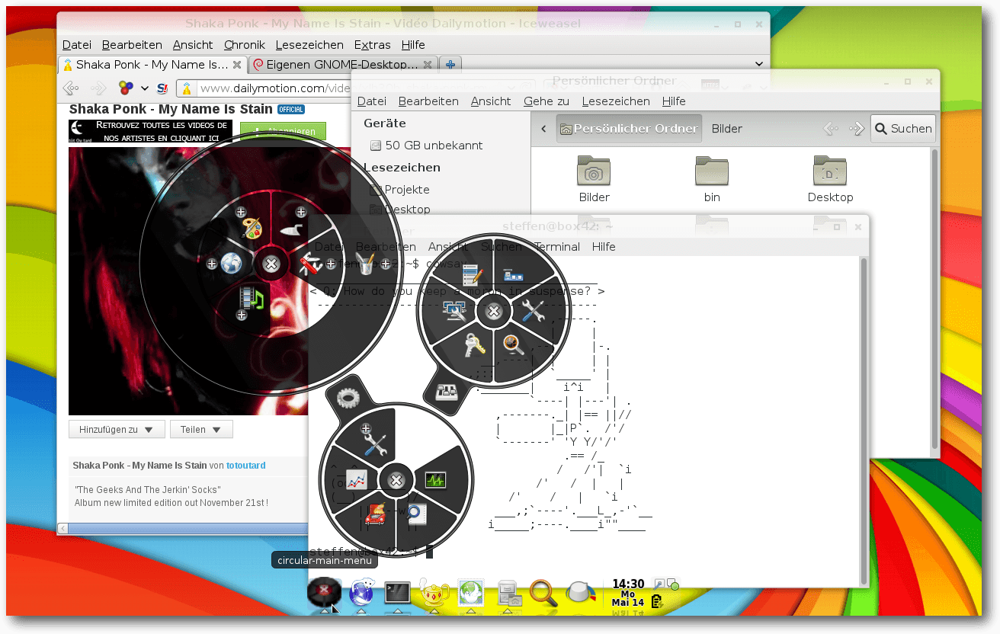
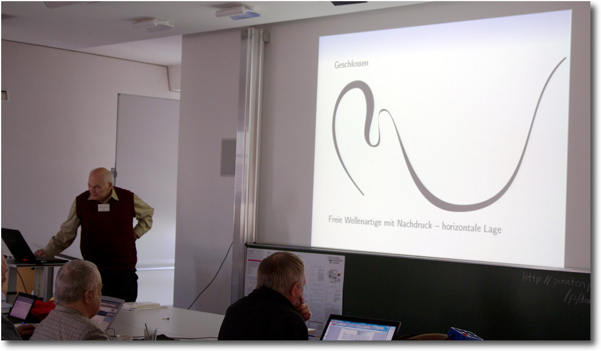

freiesMagazin April 2013
(ISSN 1867-7991)
Topthemen dieser Ausgabe
GNOME-Desktop ohne GNOME-Shell zusammenstellenDer GNOME-3-Desktop lässt sich mit geringem Aufwand auch ohne GNOME-Shell selbst zusammenstellen. Statt der GNOME-Shell kommen dabei ein eigenes Panel und ein eigener Fenstermanager zur Anwendung. Im Artikel werden Avant Window Navigator als Panel und Compiz als Fenstermanager verwendet. (weiterlesen)
Firefox-Erweiterungen mit dem Add-on-SDK erstellen – Teil III
Im letzten Teil dieser Reihe ging es darum, wie die aktuelle Auswahl im Browser festgestellt werden kann und der passende Wikipedia-Artikel in einem neuem Tab geöffnet wird. Dieser Teil der Reihe soll es alternativ möglich machen, den Wikipedia-Artikel in einem Panel anzuzeigen. (weiterlesen)
PNG-Bilder (automatisch) optimieren
Eine Frage, die man sich bei der Überschrift stellen könnte, ist: „Sind meine Bilder nicht optimal?“ Die Antwort ist, dass alles eine Frage der Definition ist. Mit „optimal“ ist in diesem Fall die Dateigröße des PNG-Bildes in Relation zur Qualität gemeint. In dem Artikel sollen ein paar Werkzeuge vorgestellt werden, wie man PNG-Bilder ohne großen Qualitätsverlust verkleinern kann. (weiterlesen)
Zum Index
Inhalt
Linux allgemeinDer März im Kernelrückblick
Anleitungen
Nur keine Angst: Effektives Arbeiten mit der Shell
GNOME-Desktop ohne GNOME-Shell zusammenstellen
docopt – Eleganter Umgang mit Parametern von Kommandozeilenprogrammen
Firefox-Erweiterungen mit dem Add-on-SDK erstellen – Teil III
Software
PNG-Bilder (automatisch) optimieren
Community
Rückblick: DANTE-Tagung 2013 in Gießen
Review: Software-Architekturen dokumentieren und kommunizieren
Rezension: Linux-Server mit Debian 6 GNU/Linux
Magazin
Editorial
Leserbriefe
Veranstaltungen
Vorschau
Konventionen
Impressum
Zum Index
Editorial
freiesMagazin feiert Geburtstag
Am 18. März war es soweit und freiesMagazin feierte seinen siebten Geburtstag. Lustigerweise haben selbst wir unseren eigenen Geburtstag vergessen, sodass unser Blog-Artikel [1] einige Tage verspätet erfolgte. Am 18. März 2006 erschien die erste Ausgabe von freiesMagazin, damals noch unter Namen „Ikhaya-Newsletter“ unter dem Dach von ubuntuusers.de. Im Juni 2006 folgte dann die Umbenennung zu freiesMagazin. Über die Jahre hinweg veränderte sich so einiges: das Layout, das Aussehen und die Schrift. Das wichtigste ist jedoch, dass es immer von der Community und für die Community gemacht wird. freiesMagazin lebt ausschließlich von der Community. Nach sieben Jahren gibt es auch mal wieder einen guten Zeitpunkt auf ein paar Statistiken einzugehen. Bis zur jetzigen Ausgabe erschien seit März 2006 ohne Ausnahme jeden Monat unterbrechungsfrei eine freiesMagazin-Ausgabe. Somit kommen wir auf 84 Hefte mit insgesamt 220 beteiligten Autoren. Mit einer Gesamtzahl von 840 Artikeln sind es ca. 10 Artikel, die in einem Magazin enthalten sind. Damit nach diesen sieben Jahren auch weitere sieben Jahre folgen können, brauchen wir Ihre Unterstützung. Jeder darf mitmachen [2] und über sein Lieblingsthema oder Lieblingssoftware berichten. Als Geschenke nehmen wir sehr gerne Artikelentwürfe an unsere Redaktions-E-Mail-Adresse redaktion@freiesMagazin.de entgegen.April, April!
Der erste April ist immer der Tag, an dem man besonders im Internet viele Nachrichten liest, die nicht stimmen und zum schmunzeln anregen sollen. Google bringt mit Google Nose [3] Gerüche in die Suchmaschine, während Twitter die Nutzung von Vokalen [4] kostenpflichtig macht. Zuletzt hatten wir im Jahr 2011 unseren letzten April-Scherz [5] bei dem einige unserer Leser hereingefallen sind. Genauso wie letztes Jahr verzichteten wir erneut auf einen April-Scherz. Uns fehlte schlicht eine gute Idee für einen April-Scherz. Schließlich soll so einer ja auch zum Schmunzeln anregen. Ganz ohne April-Scherz wünschen wir Ihnen viel Spaß beim Lesen der neuen Ausgabe. Ihre freiesMagazin-Redaktion Links[1] http://www.freiesmagazin.de/20130321-freiesmagazin-feiert-siebten-geburtstag
[2] http://www.freiesmagazin.de/mitmachen
[3] http://google,com/nose
[4] http://blog.twitter.com/2013/03/annncng-twttr.html
[5] http://www.freiesmagazin.de/20110401-limo-neuer-name-fuer-das-magazin
Das Editorial kommentieren
Zum Index
Der März im Kernelrückblick
von Mathias Menzer Basis aller Distributionen ist der Linux-Kernel, der fortwährend weiterentwickelt wird. Welche Geräte in einem halben Jahr unterstützt werden und welche Funktionen neu hinzukommen, erfährt man, wenn man den aktuellen Entwickler-Kernel im Auge behält.Linux 3.9
Knapp 14 Tage nahm Torvalds Merge Requests entgegen, bevor er die erste Entwicklerversion zur Verfügung stellte [1]. Zu den Änderungen, die in 3.9 aufgenommen wurden, zählen zwei neue Architekturen. Arc ist eine 32bit-RISC-Architektur [2], die für den Einsatz in Unterhaltungs- und Netzwerkgeräten gedacht ist und sehr energieeffizient arbeiten soll. Bei Metag handelt es sich ebenfalls um eine 32bit-Architektur, die als Besonderheit einen Befehlssatz für Signalverarbeitung bereithält und darüber hinaus Multithreading beherrscht. Die Meta-Prozessoren sollen den zeitgleichen Betrieb mehrerer unterschiedlicher Betriebssysteme ermöglichen, die sich verschiedene Aufgaben in einem System teilen, so könnte eines zum Beispiel die Benutzerschnittstelle betreiben, während andere Audio- oder Video-Datenströme behandeln. Das Dateisystem Btrfs wurde um RAID-Funktionen [3] ergänzt und kann nun mit den RAID-Leveln 5 und 6 umgehen, die sich recht ähnlich sind und sowohl hohe Schreib- und Leseleistung als auch die Wiederherstellbarkeit von Daten im Fehlerfall zum Ziel haben. Darüber hinaus wurde der Umgang mit Schnappschüssen des Dateisystems effizienter gestaltet und die Leistungsfähigkeit von fsync, als das Schreiben der im Arbeitsspeicher zwischengelagerten Änderungen auf das Dateisystem, verbessert. Linux 3.9-rc2 [4] lieferte einige Nachzügler, darunter einen Treiber für den mittels USB 3.0 angeschlossenen Gigabit-Netzwerk-Adapter AX88179/178A. Anstelle einer Beruhigung wurde die Entwicklung dann eher „rasanter“: Sowohl -rc3 [5] als auch -rc4 [6] fielen von der Zahl der Änderungen eher größer aus. Auch wenn es sich überwiegend um Fehlerkorrekturen handelte, waren dennoch keine kritischen Probleme dabei. Außerdem wurde Ext4 nun mit einer Plausibilitätsprüfung für die Extend Status Trees ausgestattet. Dabei handelt es sich um eine strukturierte Speichermöglichkeit, um Informationen über Extends – aus mehreren Blöcken bestehende, logisch zusammengefasste Speicherbereiche – zu hinterlegen. Die Extend Status Trees können als Grundlage für neue Funktionen dienen und bereits bestehende vereinfachen, wie beispielsweise die Reservierung von Speicherbereichen für sehr große Datenmengen. Ging die Zahl der Änderungen in 3.9-rc5 [7] zwar zurück, so war die Gesamtzahl der geänderten Quelltext-Zeilen so hoch wie seit dem -rc1 nicht mehr. Der Grund lag in der Rücknahme eines Patches, mit dem im Entwicklungszyklus für Linux 3.7 der Name eines Moduls für den Seriell-Port-Treiber 8250 geändert wurde. Die daraus resultierenden Probleme erforderten einige Kniffe, die der SUSE-Entwickler Jiri Slaby als so furchtbar ansah, dass er die Änderung zurücknahm und damit eine große Menge an Quelltext verschob.Umgestaltung von kernel.org
Nachdem sich auf der Webseite von Kernel.org [8] jahrelang nicht viel getan hatte, mussten sich die Nutzer im März gleich zweimal umgewöhnen. Den Anfang machte die Umstellung auf den Seiten-Generator Pelican [9]. Dieser erzeugt statische HTML-Seiten in einem einheitlichen Design, sodass sowohl die Erstellung als auch die Spiegelung der kernel.org-Seiten sehr einfach gehalten wird. Trotzdem kommt das neue Layout übersichtlicher daher. Neuigkeiten finden sich nun unter dem eigenen Punkt „Site News“ statt wie bisher am unteren Ende der Webseite. Weitere wichtige Punkte wie die FAQs, und der Überblick über die verschiedenen Releases sind ebenfalls als Unterpunkte prominent aufgeführt.Das aktuelle Aussehen von kernel.org.
Nach wenigen Tagen gab es wieder eine Änderung. Zwar blieb die Seitenerstellung mit Pelican erhalten, doch das bis dahin genutzte Standard-Layout entfiel zugunsten eines eher minimalen Designs. Der Grund hierfür lag darin, dass die Lizenz des CSS-Designs nicht eindeutig ist und die Betreiber daher ein schnell zusammengebasteltes Design in Stellung gebracht hatten, um eventuelle Probleme zu vermeiden. Daher wird derzeit unter webmaster@kernel.org nach Kreativen gesucht, welche die Anpassung der CSS-Vorlagen in Angriff nehmen möchten. Ebenso wurde das Webfrontend für die Versionsverwaltung [10] des Kernels geändert. Dies übernimmt nun cgit [11], das sich optisch ein wenig von der bisherigen Oberfläche unterscheidet. Auf der Anwenderseite weichen die Funktionen selbst nur geringfügig ab. So verbirgt sich hinter der Funktion „Log“ nun das bisherige „Shortlog“, die ausführlichere Variante entfällt. Links
[1] https://lkml.org/lkml/2013/3/3/147
[2] https://de.wikipedia.org/wiki/Reduced_Instruction_Set_Computer
[3] https://de.wikipedia.org/wiki/RAID
[4] https://lkml.org/lkml/2013/3/10/256
[5] https://lkml.org/lkml/2013/3/17/186
[6] https://lkml.org/lkml/2013/3/23/147
[7] https://lkml.org/lkml/2013/3/31/133
[8] https://www.kernel.org
[9] http://docs.getpelican.com/
[10] https://git.kernel.org/cgit/linux/kernel/git/torvalds/linux.git/
[11] http://hjemli.net/git/cgit/
| Autoreninformation |
| Mathias Menzer (Webseite) wirft gerne einen Blick auf die Kernel-Entwicklung, um mehr über die Funktion von Linux zu erfahren. und um seine Mitmenschen mit seltsamen Begriffen verwirren zu können. |
Diesen Artikel kommentieren
Zum Index
Nur keine Angst: Effektives Arbeiten mit der Shell
von Jens Dörpinghaus Es wird oft diskutiert, dass sich Linuxneulinge einen einfachen, nur GUI-basierten Umgang mit Linux wünschen und unwirsch auf Dokumentationen oder Hilfen in Foren, die ihnen Befehle für die Konsole auf den Weg geben, reagieren. Dabei macht man sich das Leben selber schwer, denn der Umgang mit der Shell vereinfacht und beschleunigt viele Dinge. Und das nicht nur für versierte Systemadministratoren, sondern auch auf dem privaten PC. Mitnichten ist die Shell ein Relikt vergangener Zeiten. Das zeigt nicht zuletzt die Tatsache, das Microsoft versucht, mit der Powershell [1] eine ähnlich mächtige Plattform bereitzustellen.Einführung
Die Shell läuft auch wenn die grafische Oberfläche ihren Dienst aufgibt, man kann bequem auf andere Rechner zugreifen und zu guter Letzt kann man viele alltägliche Dinge sehr viel schneller erledigen. Viele gute Gründe, sich mit der Shell zu beschäftigen. Man sollte sich jedoch, wenn man gar keine Vorahnung in diesem Bereich hat, auf etwas Frust einstellen: Umdenken ist nötig! Für die erste Verwirrung sorgt sicherlich die Tatsache, dass es unter Linux nicht eine Shell gibt, sondern viele verschiedene. Um nur ein paar Beispiele zu nennen, gibt es die Bourne-Shell (sh), Korn-Shell (ksh), C-Shell (csh) und die Bourne-Again-Shell (bash), die Standard bei den meisten Distributionen ist und die im folgenden auch Thema sein soll. Weiter gibt es die bash-kompatible Debian-Almquist-Shell (dash) und die Z-Shell, die zeitweise Standardshell von Mac OS X war (siehe „Die Z-Shell (zsh) – Ein mächtige Alternative zur Bash“, freiesMagazin 03/2013 [2]). Die verschiedenen Shells haben alle ihre spezifischen Vor- und Nachteile [3]. Man kann sich entweder direkt beim Log-in ohne grafische Oberfläche einloggen oder man erreicht dies später über die Tastenkombination „Strg“ + „Alt“ + „F1“ bis „Strg“ + „Alt“ + „F6“. Zurück zur grafischen Oberfläche gelangt man dann mit „Strg“ + „Alt“ + „F7“. Weiter ist es möglich, in der grafischen Oberfläche ein Terminal oder eine Konsole zu öffnen. Dies versteckt sich z. B. im Menü „Zubehör“ in GNOME oder in „System“ in KDE. Die genaue technische Unterscheidung gibt vielfach Grund zur Diskussion und soll hier nicht Thema sein. Welchen Weg man aber auch wählt: Die Bedienung ist stets gleich, auch wenn die Konsole als Fenster in der grafischen Oberfläche läuft.Navigieren durch den Verzeichnisbaum
Nach dem Log-in oder dem Start der Konsole befindet man sich automatisch in seinem Heimverzeichnis. Wie in einer grafischen Oberfläche befindet man sich immer in einem Verzeichnis und kann dort Befehle ausführen. Das aktuelle Verzeichnis kann man sich mit$ pwd
ausgeben lassen. Hier sollte das aktuelle Heimverzeichnis ausgegeben werden.
Dieses findet sich unter /home/BENUTZERNAME, wobei BENUTZERNAME der
aktuell eingeloggte Benutzer ist. Dieser Pfad wird immer in der
Umgebungsvariablen [4] $HOME
gespeichert, die ab hier im Artikel benutzt wird. Will man den Inhalt des
aktuellen Verzeichnisses sehen, benutzt man
$ ls
wobei die verschiedenen Farben Auskunft über die Arten der Dateien und
Verzeichnisse geben. Eventuell ist diese Farbanzeige-Option aber je nach
Distribution auch deaktiviert.
Die Befehle sind oft mächtiger als ihr erstmaliger Aufruf vermuten
lassen könnte. Verschiedene Parameter können meist mit einem Bindestrich
versehen angehängt werden. So liefert
$ ls -l
detaillierte Informationen über die Dateien, etwa ihre Größe, Rechte oder
das Datum der letzten Änderung.
Wann immer man Hilfe zu Befehlen benötigt oder schlicht nicht weiß, was ein
Befehl genau macht, nutzt man man. Dieser Befehl zeigt die „Manual Pages“,
also Handbuchseiten, zu einem bestimmten Befehl an. Beenden kann man diese
Ansicht mit der Taste „Q“. Die allermeisten Fragen lassen sich damit
beantworten und es ist sicher nicht aus der Luft gegriffen, zu behaupten,
dass diese Handbuchseiten zu den besten Dokumentationen überhaupt gehören.
So kann man etwa mit
$ man ls
erkennen, dass man auch versteckte Dateien mit dem Zusatz -a anzeigen
kann. Man kann diese Parameter auch kombinieren, etwa mit
$ ls -la
Die nächste Frage ist nun, wie man das Verzeichnis wechselt. Dazu gibt es
den Befehl cd („change directory“). Jedes Verzeichnis beinhaltet die
Verzeichnisse "." und "..". Ersteres ist eine Referenz auf sich selbst, also
führt
$ cd .
zu keiner Änderung, wie man mit einer weiteren Eingabe von pwd erkennen
kann. ".." wiederum verweist auf das darüber liegende Verzeichnis. Führt man
also
$ cd ..
aus, so wechselt man in das Elternverzeichnis. Man kann Verzeichnisse relativ,
d. h. ausgehend von dem aktuellen Verzeichnis in dem man sich befindet, oder
absolut, also ausgehend von der Verzeichnisbaumwurzel, angeben. Gibt es im
aktuellen Verzeichnis ein Unterverzeichnis test, so kann man mit
$ cd test
in dieses wechseln. Global kann man allerdings auch den kompletten
Verzeichnispfad angeben, etwa mit
$ cd /home/benutzername
$ cd $HOME
An dieser Stelle sei auch eindringlich auf die Funktion der Tabulatortaste
hingewiesen. Drückt man diese, so bekommt man alle Dateien angezeigt, die
auf das bisher eingegebene passen oder es wird vervollständigt. Es ist
sinnvoll, sich die Benutzung sofort anzugewöhnen. So wird
$ cd $HOME
$ cd /h
sofort zu
$ cd /home/
vervollständigt und
$ cd /home/BE
zu
$ cd /home/BENUTZERNAME/
wobei BENUTZERNAME durch den tatsächlich eingeloggten Benutzer ersetzt
werden sollte.
Kopieren und Verschieben
Kurz sei noch das Kopieren mittels cp („copy“) und das Verschieben mittels mv („move“) von Daten erwähnt. Die Befehle folgen beide der gleichen Syntax.$ mv test test2
benennt die Datei oder das Verzeichnis test in test2 um.
$ mv test $HOME/
verschiebt die Datei oder das Verzeichnis test nach $HOME. Dabei kann
auch ein neuer Name am Zielort gewählt werden:
$ mv test $HOME/test2
Analog funktioniert dies beim Kopieren.
$ cp test $HOME/
kopiert die Datei test ins Heimverzeichnis und
$ cp test $HOME/test2
würde die Datei test nach $HOME kopieren und dort mit dem Namen test2
ablegen.
Will man ein ganzes Verzeichnis kopieren, muss man im Gegensatz zum
Verschieben den Parameter -r mit angeben:
$ cp -r testdir $HOME/
Der Parameter -r ist wichtig, da nur so rekursiv, also mit allen
Unterverzeichnissen, kopiert wird.
An dieser Stelle müssen auch Metazeichen erwähnt werden. So steht ein * (Stern)
für alle Zeichen in beliebiger Anzahl.
$ cp * $HOME
kopiert alle Dateien im aktuellen Verzeichnis nach $HOME, ausgenommen
Dateien, die mit einem . (Punkt) beginnen, da diese eine Spezialbedeutung haben
(auf die hier aber nicht näher eingegangen wird).
Man könnte dies sinnvoll einschränken auf *.txt oder Foto.*. Ersteres
liefert (vereinfacht gesagt) alle Dateien mit der Endung txt und Letzteres
alle Dateien mit Namen Foto und beliebiger Endung, also Foto.jpg und
Foto.png, aber nicht foto.jpg, da Groß- und Kleinschreibung relevant ist.
Ein weiteres nützliches Zeichen ist ? (Fragezeichen), das für genau ein beliebiges Zeichen
steht. So steht Foto?.jpeg für Foto1.jpeg oder Foto2.jpeg, aber auch
Fotoa.jpeg.
Möchte man nur bestimmte Zeichen, so kann man diese mit eckigen Klammern
angeben. [0-9] etwa steht für Zahlen, [abx] für a, b oder x und [a-d]
für die Buchstaben a bis d.
Ebenso kann man die Metazeichen auch auf ls anwenden. So gibt
$ ls *.jpeg
alle Dateien mit der Endung jpeg aus.
Pipelines
Ein Problem, das mit dem ls-Befehl verbunden sein kann, ist die Tatsache, dass bei vielen Dateien die Ausgabe über den Bildschirminhalt hinausgeht. ls bietet selbst keine Möglichkeit, die Ausgabe am Bildschirmende zu stoppen. Auch dies ist eine der Eigenheiten im Umgang mit der Shell: Die Befehle machen selten viel, aber das Wenige, was sie machen, machen sie gut. more hingegen ist ein Befehl, der die Ausgabe genau auf eine Bildschirmgröße auf einmal reduziert und ein Scrollen ermöglicht. Wie bekommt man aber die Ausgabe von ls als Eingabe für den Befehl more? Dafür stehen sogenannte Pipelines zur Verfügung. Das Zeichen | lenkt die Standardausgabe des linken Befehls in die Standardeingabe des rechten Befehls um [5]. So ergibt$ ls | more
nun das gewünschte Ergebnis.
Pipelines werden im Folgenden noch ausgiebiger behandelt. Zunächst wird nun
auf einige, oft auftretende Situationen eingegangen und ihre Handhabung
beschrieben. Möchte man beispielsweise ein Paket über die Paketverwaltung
installieren, so ist bei den meisten Distributionen entweder
yum [6] oder apt [7]
verfügbar. Beide Befehle seien hier parallel beschrieben. Weiß man, wie das
zu installierende Paket heißt, beispielsweise vlc, so kann man es mit
$ apt-get install vlc
$ yum install vlc
installieren. Diese Befehle werden allerdings mit hoher Wahrscheinlichkeit
eine Fehlermeldung ausgeben, da man zum Installieren Root-Rechte benötigt.
Diese kann man sich einmalig für einen Befehl geben lassen, indem man sudo
davor schreibt. Weiß man den Namen des Paketes allerdings nicht, so kann man
dieses mit
$ yum install vlc
$ apt-cache search vlc
$ yum search vlc
suchen. Wie oben kann man mit | more zu lange Ausgaben am Bildschirmende
anhalten. Nach der Suche kann man mit dem oben genannten Befehl die Pakete
installieren.
Man kann die Standardausgabe allerdings auch in eine Datei umleiten. >
überschreibt den Dateiinhalt, >> hängt es an eine Datei an.
$ yum search vlc
$ ls >> test.txt
leitet die Ausgabe von ls in eine Datei namens test.txt um. Man kann
diese Datei dann mit
$ cat test.txt
auf dem Bildschirm ausgeben.
In diesem Zusammenhang ist auch tail erwähnenswert. Dieser Befehl gibt nur
die letzten Zeilen einer Datei aus. Dies ist beispielsweise für Logfiles
nützlich. Man kann diesen Befehl mit
$ cat test.txt | tail
aber auch direkt
$ tail test.txt
anwenden. Sucht man bestimmte Zeilen in einer Datei, so kann man dies mit grep erreichen.
$ cat test.txt | grep foto
oder wieder kurz
$ grep test.txt foto
gibt nur die Zeilen aus, die die Zeichenfolge foto beinhalten. Somit sind
$ ls *message*
und
$ ls | grep message
gleichbedeutend.
Texte editieren mit vim
Will man die Datei test.txt bearbeiten, gibt es dafür verschiedene Texteditoren. Natürlich kann man einen grafischen Editor benutzen. Nun ist allerdings nicht immer eine grafische Oberfläche vorhanden. Außerdem können manche Menschen mit textbasierten Editoren wesentlich effektiver arbeiten. Im Folgenden soll nun also vi bzw. vim [8] verwendet werden.$ vim test.txt
Um die Datei zu bearbeiten, muss man in den Editiermodus wechseln, dies
geschieht durch Drücken der Taste „I“. Will man diesen verlassen, drückt man
„Escape“.
Es seien hier nur die wichtigsten Befehle angegeben. Außerhalb vom
Editiermodus kann man mit :w und „Return“ die Datei speichern und mit :q
vim verlassen. :q! erzwingt das Verlassen ohne vorheriges Speichern, :wq
speichert und beendet dann vim.
Suchen von Dateien und Parallelausführung
Gelegentlich muss man auch Dateien suchen. Dazu gibt es es den Befehl find. Er erwartet zunächst einen Verzeichnispfad und eine Bedingung. Möchte man den gesamten Verzeichnisbaum nach allen Dateien mit der Endung jpeg durchsuchen kann man dazu$ find / -name "*.jpeg"
benutzen. Dies wird allerdings seine Zeit dauern. (Fast) jeder Prozess kann
abgebrochen werden, indem man „Strg“ + „C“ drückt. Man kann einen Prozess auch
im Hintergrund starten, dazu muss man ein & anfügen. Damit können etliche
Programme parallel gestartet werden. Die Standardausgabe wird allerdings
immer noch auf dem Bildschirm ausgegeben. So ist
$ find / -name "*.jpeg" &
nicht wirklich zielführend. Man könnte allerdings die Ausgabe von find
umleiten, etwa mit
$ find / -name "*.jpeg" >> suche &
Bemerkungen
Eine nützliche Hilfe im Umgang mit der Shell sind Referenzkarten, bspw. die UNIX-Refcard von Christof Böckler [9]. Diese kann man sich zum Beispiel unter die Schreibtischunterlage legen und bei Bedarf auch mit Notizen versehen. Je länger man mit der Shell arbeitet, desto seltener wird man sie benötigen. Links[1] https://www.microsoft.com/powershell
[2] http://www.freiesmagazin.de/freiesMagazin-2010-03
[3] https://de.wikipedia.org/wiki/Unix-Shell#Weiterentwicklungen
[4] https://de.wikipedia.org/wiki/Umgebungsvariable
[5] https://de.wikipedia.org/wiki/Standard-Datenströme
[6] http://linuxwiki.de/yum
[7] http://linuxwiki.de/apt
[8] http://linuxwiki.de/Vim
[9] http://www.jamesie.de/unix/refcards/
| Autoreninformation |
| Jens Dörpinghaus hat Computer noch ohne grafische Benutzeroberfläche kennengelernt und nutzt deswegen auch unter Linux gerne die Vorteile der Shell. |
Diesen Artikel kommentieren
Zum Index
GNOME-Desktop ohne GNOME-Shell zusammenstellen
von Steffen Rumberger Der GNOME-3-Desktop [1] lässt sich mit geringem Aufwand auch ohne GNOME-Shell [2] selbst zusammenstellen. Statt der GNOME-Shell kommen dabei ein eigenes Panel und ein eigener Fenstermanager zur Anwendung. Im nachfolgend beschriebenen Beispiel werden der Avant Window Navigator [3] als Panel (auch Dock genannt) und Compiz [4] als Fenstermanager verwendet. Natürlich lässt sich Compiz auch durch jeden anderen Fenstermanager ersetzen. Ein Vorteil dieses Vorgehens wäre dann, dass 3-D für GNOME 3 keine Voraussetzung mehr ist. Hinweis: Das Powermanagment sowie die Sonder- und Multimedia-Tasten werden weiterhin funktionieren. Was nicht auf Anhieb funktioniert, sind die Desktop-Notifications und das Programm für den Umgang mit Wechselmedien. Auch das Bluetooth-Verwaltungs-Applet benötigt etwas Nacharbeit, die im Folgenden ebenfalls beschrieben wird.GNOME-Session zusammenstellen
Der X-Session-Manager ist nach dem Login für das Starten der Desktop-Umgebung (ähnlich dem Autostart) verantwortlich. Die Aufgaben des X-Session-Managers kann auch weiterhin das Programm gnome-session übernehmen. Um eine eigene GNOME-Session zusammenzustellen, muss eine Konfigurationdatei angelegt und der Session ein neuer Name zugewiesen werden, wobei der Name der Konfigurationsdatei, auch der Name für die Session (ohne Dateiendung) ist. Hier wird eine neue Session mygnome konfiguriert. Die Konfiguration umfasst die eigenen Anwendungen (Fenstermanager, Panel usw.), die als Kernkomponenten der Desktop-Umgebung geladen werden sollen. GNOME 3 kann auch mit einem anderen Fenstermanager und Panel eingerichtet werden.
Die Datei $HOME/.config/gnome-session/sessions/mygnome.session wird mit folgendem Inhalt neu angelegt:
[GNOME Session]
Name=GNOME 3 without Shell
RequiredComponents=gnome-settings-daemon;
RequiredProviders=wm;panel;
DefaultProvider-wm=compiz
DefaultProvider-panel=avant-window-navigator
Listing: mygnome.session
Es können in dieser Konfigurationsdatei alle Anwendungen angegeben werden, für welche sich unter
/usr/share/applications/ ein Starter (.desktop-Dateien) befindet.
Eigene
bzw. fehlende .desktop-Dateien können unter /usr/local/share/applications/ oder
alternativ unter $HOME/.local/share/applications/ angelegt werden und haben dann genauso Gültigkeit.
Die Dateien im Benutzer-Verzeichnis haben Vorrang gegenüber denen unter /usr/local/.
Die ursprüngliche Konfiguration befindet sich in /usr/share/gnome-session/sessions/gnome.session.
Für eine ausführliche Beschreibung der Funktionsweise und des Aufbaus der
Konfigurationsdatei siehe die Manpage gnome-session(1).
Es ist auch möglich, eine
Session zu überschreiben und so eine neue Session für gnome.session oder
gnome-fallback.session anzulegen.
Der GNOME 3 Fallback-Modus (gnome-fallback.session) ist der Ersatz für die GNOME
Shell für den Fall, dass kein 3-D zur Verfügung steht. Diese Konfiguration basiert auf dem
GNOME-Panel. Sie kann vom Display-Manager wie beispielsweise GDM gestartet werden und
stellt keine speziellen Hardwareanforderungen.
Über den dconf-Schlüssel /org/gnome/desktop/session/session-name muss festgelegt
werden, dass die eigene Session gestartet werden soll. Dazu trägt man den Name der Session
als Wert für den Schlüssel ein:
Name=GNOME 3 without Shell
RequiredComponents=gnome-settings-daemon;
RequiredProviders=wm;panel;
DefaultProvider-wm=compiz
DefaultProvider-panel=avant-window-navigator
$ dconf write /org/gnome/desktop/session/session-name mygnome
Der Standardwert ist gnome und startet die GNOME-Shell bzw., wenn kein 3-D zur
Verfügung steht oder es explizit im Display-Manager angeben wurde, den Fallback-Modus.
Noch aber ist das neue Setup nicht funktionsfähig und ein Neustart würde an diesem Punkt
nicht funktionieren. Sobald ein Programm aus der GNOME-Session-Konfigurationsdatei nicht
gestartet werden kann, schlägt der komplette Start der Desktop-Umgebung fehl.
Für Compiz
ist, anders als bei Mutter [5] oder
Metacity [6],
kein Starter hinterlegt und der Fenstermanager kann deshalb nicht gestartet werden.
Es muss
also zuerst noch ein Starter für Compiz angelegt werden.
Einrichten des Fenstermanagers
In der GNOME-Shell kommt der Fenstermanager Mutter zum Einsatz, der in der GNOME-Session-Konfiguration angegeben werden kann. Dieser Artikel soll jedoch Hinweise zum Einrichten von Alternativen geben und zeigt dazu exemplarisch das Einrichten von Compiz.Der Anwendungsumschalter ist Teil des Fenstermanagers. Unter Compiz muss dieser extra aktiviert werden.
Damit ein Programm in der GNOME-Session-Konfiguration angegeben werden kann, muss dafür ein Starter (.desktop-Datei) hinterlegt sein. Für Compiz fehlt dieser. Deshalb muss zuerst ein Starter mit einem Editor mit root-Rechten unter $HOME/.local/share/applications/compiz.desktop erstellt werden:
[Desktop Entry]
Encoding=UTF-8
Name=Compiz
Comment=OpenGL-Composition- und Windowmanager
Exec=compiz
Terminal=false
Type=Application
StartupNotify=true
Listing: compiz.desktop
Anwendungen wie der Avant Window Navigator benötigen einen
Composition-Window-Manager [7].
Die Fenstermanager Compiz und Mutter haben den Composition-Manager aktiviert, beim
Fenstermanager Metacity muss dieser über den dconf-Schlüssel /org/gnome/metacity/compositing-manager
aktiviert werden:
Encoding=UTF-8
Name=Compiz
Comment=OpenGL-Composition- und Windowmanager
Exec=compiz
Terminal=false
Type=Application
StartupNotify=true
$ dconf write /org/gnome/metacity/compositing-manager true
Es muss also zwischen Fenstermanagern mit und ohne Composition-Manager unterschieden werden.
Ist das typische GNOME-Theme Adwaita installiert, wird dieses auch vom Fenstermanager
genutzt. Das Theme wird im Paket gnome-themes-standard durch die Paketverwaltung
bereitgestellt. Es funktioniert aber auch jedes andere GNOME-Theme.
Autostart
Die GNOME Entwickler unterscheiden im Autostart, ob die GNOME-Shell oder der Fallback-Modus geladen wird. So können Starter (.desktop-Dateien) im Autostart einen AutostartCondition-Eintrag enthalten, was eine Erweiterung der Desktop Application Autostart Spezifikation [8] ist. Ein solcher Eintrag kann der Grund sein, warum ein Programm nicht startet. Dann ist es nötig, diesen Eintrag zu überschreiben. Die in den folgenden zwei Listings dargestellten AutostartCondition-Einträge sind für die Unterscheidung verantwortlich und legen fest, welche Anwendungen im Autostart standardmäßig in welchem Modus starten sollen.AutostartCondition=GNOME3 if-session gnome-fallback
erlaubt das Starten nur im „echten“ fallback-Modus, also wenn die
Session mit termgnome-fallback benannt ist.
AutostartCondition=GNOME3 unless-session gnome
erlaubt das Starten nur, wenn die GNOME-Shell
nicht geladen, also die Session nicht mit gnome benannt ist.
Ansonsten wird der Autostart für den Starter unterbunden.
Der folgende Befehl zeigt alle AutostartCondition-Einträge im Autostart an:
$ grep AutostartCondition /etc/xdg/autostart/*.desktop /usr/share/gnome/autostart/*.desktop
Der Unterschied zwischen den Startern im Autostart und denen in der GNOME-Session-Konfigurationsdatei
ist, dass ein nicht startendes Programm im Autostart nicht den Start der Desktop-Umgebung
verhindert. Anwendungen, die nicht zwingend für die Desktop-Umgebung notwendig sind,
sollten also immer in den Autostart eingetragen werden.
AutostartCondition-Eintrag überschreiben
Um einen AutostartCondition-Eintrag, der das Starten eines Programms im gewünschtem Modus verhindert, zu überschreiben, legt man sich im Benutzerverzeichnis für den Autostart eine Kopie des Starters an, diese aber entsprechend ohne AutostartCondition-Eintrag. Dies kann nötig sein, damit der Umgang mit Wechselmedien und das Starten des Bluetooth-Verwaltungs-Applets funktionieren. Das automatische Starten von Programmen beim Anmelden kann, wie gewohnt, mit dem GNOME-Dialog Startprogrammeinstellungen (Programm /usr/bin/gnome-session-properties) verwaltet werden. Legt man über den Dialog neue Autostart-Einträge an, wird kein AutostartCondition-Eintrag gesetzt. Im Terminal und in Shell-Skripten kommentiert das folgende Beispiel einen AutostartCondition-Eintrag komplett aus, sodass Programme immer starten:$ mkdir -p $HOME/.config/autostart/
$ sed '/AutostartCondition=/s/^/# /g' /etc/xdg/autostart/FOO.desktop > HOME/.config/autostart/FOO.desktop
$ sed '/AutostartCondition=/s/^/# /g' /etc/xdg/autostart/FOO.desktop > HOME/.config/autostart/FOO.desktop
Umgang mit Wechselmedien, Bluetooth-Verwaltungs-Applet und Notification-Daemon
Die GNOME-Shell kümmert sich um Wechseldatenträger, sie hängt angeschlossene Geräte automatisch ein und führt gegebenenfalls Programme aus. Damit beispielsweise der Medienspieler beim Einlegen einer DVD automatisch startet, muss der Starter für den Einhänge-Assistent (/usr/share/gnome/autostart/gnome-fallback-mount-helper.desktop), ohne AutostartCondition-Eintrag in den Autostart eintragen werden. Soll das Bluetooth-Verwaltungs-Applet starten, muss der Starter für die Bluetooth-Verwaltung (/usr/share/gnome/autostart/bluetooth-applet.desktop) ohne den beschriebenen AutostartCondition-Eintrag in den Autostart eintragen werden. Beide Starter erlauben sonst nur das Starten im „echten“ fallback-Modus. Gemeint ist die Session gnome-fallback. Selbiges gilt unter anderem auch für den Starter, der die Lautstärkeregelung bereitstellt (/etc/xdg/autostart/gnome-sound-applet.desktop) aus dem Paket gnome-control-center-data. Damit passive Pop-up-Meldungen (Desktop-Notifications) angezeigt werden, muss der Notification-Daemon gestartet sein. Passiert dies nicht, obwohl in der Konfiguration für die GNOME-Session angegeben, kann es eine mögliche Lösung sein, das Programm /usr/lib/notification-daemon/notification-daemon in den Autostart einzutragen. Wem das Verhalten des Notification-Daemon in GNOME 3 nicht zusagt, der findet mit Notify OSD [9] eine Alternative. Damit Notify OSD im Autostart von GNOME startet, muss die Datei /etc/xdg/autostart/notify-osd.desktop zum Autostart hinzugefügt und dort die Option X-GNOME-Autostart-enabled=true gesetzt werden. Im Terminal und in Shell-Skripten geht das mit:$ sed '/X-GNOME-Autostart-enabled=/s/=.*/=true/g' /etc/xdg/autostart/notify-osd.desktop > $HOME/.config/autostart/notify-osd.desktop
Icons auf dem Desktop
Wer sich gerne die Dateien des Verzeichnisses Desktop auf der Arbeitsfläche angezeigen lassen möchte, der kann dies mittels des dconf-Schlüssels /org/gnome/desktop/background/show-desktop-icons aktivieren:$ dconf write /org/gnome/desktop/background/show-desktop-icons true
Die Anzeige der Icons erledigt Nautilus.
Zusammenfassung
Es ist möglich, GNOME 3 ohne GNOME Shell zu nutzen und sich einen Desktop nach eigenen Wünschen zusammenzustellen und für alle Komponenten andere Anwendungen zu definieren. Dies wurde hier am Beispiel von Compiz und Avant Window Manager gezeigt. Wer diese Anwendungen schon unter GNOME 2 für die Organisation des Desktops nutzte, kann so seinen gewohnten Workflow auch unter GNOME 3 beibehalten. Allen anderen sollte es die Einrichtung von Alternativen in GNOME 3 erleichtern. Links[1] http://www.gnome.org/gnome-3/
[2] http://live.gnome.org/GnomeShell
[3] http://launchpad.net/avant-window-navigator/
[4] http://www.compiz.org/
[5] http://git.gnome.org/browse/mutter/
[6] http://blogs.gnome.org/metacity/
[7] https://de.wikipedia.org/wiki/Composition-Manager
[8] http://standards.freedesktop.org/autostart-spec/autostart-spec-latest.html
[9] http://launchpad.net/notify-osd
| Autoreninformation |
| Steffen Rumberger ist Debian GNU/Linux Nutzer und dieser Artikel entstammt einem von ihm gestarteten Wiki-Artikel auf wiki.debianforum.de. Dort finden sich weiterführende Informationen und Beispiele. |
Diesen Artikel kommentieren
Zum Index
docopt – Eleganter Umgang mit Parametern von Kommandozeilenprogrammen
von Jochen Schnelle Das Projekt docopt [1] beschreibt sich selbst als Beschreibungssprache für Kommandozeilenapplikationen (“Command-line interface description language”) und hat das Ziel, schöne Schnittstellen für Kommandozeilenapplikationen (“creates beautiful command-line interfaces”) zu generieren. Was sich beim ersten Lesen ein wenig vage anhört hat allerdings einen handfesten Hintergrund. Wer mit einem Kommandozeilenprogramm arbeitet, erwartet üblicherweise, dass beim Aufruf des Programms mit -h (oder auch --help) ein Hilfstext erscheint, der die Befehle, Argumente und Optionen des Programms zumindest kurz erklärt. Dieser Hilfstext muss natürlich in irgendeiner Form im Programm hinterlegt werden – von selbst generiert sich dieser nicht. Genau hier setzt docopt an: Den Hilfstext auf möglichst einfache und elegante Weise zu generieren. docopt entstammt dem Python-Umfeld und die Referenzimplementierung [2] liegt ebenfalls in Python vor. Es gibt aber auch eine Reihe von Portierungen in andere Programmiersprachen, dazu später mehr. Dieser Artikel beschreibt die Nutzung der Python-Version von docopt in der derzeit aktuellen Version 0.6.1.argparse, Docstrings und docopt
Unter Python werden heutzutage Befehle, Argumente und Optionen für Kommandozeilenapplikationen üblicherweise mit Hilfe des Moduls argparse [3] festgelegt, hieraus wird dann auch der Hilfstext generiert. Weiterhin gehört es unter Python zum „guten Ton“, dass man für ein Python-Modul auch einen Docstring [4] hinterlegt. Dieser wird dann beim Aufruf von help(modulname) im Python-Interpreter angezeigt. Soll innerhalb des Docstrings die Nutzung des Programm erklärt werden – was durchaus Sinn ergibt – dann muss hier all das nochmals geschrieben werden, was auch schon bei argparse hinterlegt ist. Man hat also doppelte Arbeit und redundanten Text. docopt macht aus dieser Not eine Tugend: Es generiert aus dem Docstring den Kommandozeilenhilfstext, so dass beim Einsatz von docopt die Nutzung von argparse entfallen kann.Installation
docopt für Python besteht nur aus einer einzelnen Datei, so dass diese händisch von der Projektseite [2] kopiert werden kann. Oder es wird der für Python-Module gängigere Weg der Installation via pip [5] gewählt:# pip install docopt
Ein Beispiel
Das folgende kleine Pythonprogramm zeigt die (unspektakuläre) Nutzung von docopt:'''docopt_beispiel.py
Usage:
...
Options:
...
'''
from docopt import docopt
if __name__ == '__main__':
arguments = docopt(__doc__)
print(arguments)
Listing: docopt_short.py
Das komplette Programm inklusive kompletter Hilfe: docopt_beispiel.py.
Das Programm an sich hat dabei keine echte Funktion. Über die beiden Zeilen
innerhalb des if __name__ == '__main__': Blocks werden lediglich die Befehle,
Argumente und Optionen ausgegeben, mit denen das Programm docopt_beispiel.py
aufgerufen wurde. Der Docstring zu Beginn des Listings erklärt dabei die
Nutzung des Programms. Die einzige wirklich zwingende Angabe ist dabei das
Usage:, damit docopt die nachfolgenden Befehle, Argumente und Optionen korrekt
als solche erkennt.
Ruft man das Programm jetzt auf, erscheint folgende Ausgabe:
Usage:
...
Options:
...
'''
from docopt import docopt
if __name__ == '__main__':
arguments = docopt(__doc__)
print(arguments)
$ python docopt_beispiel.py
Usage:
mein_programm.py reset
mein_programm.py listen <ip_address> <port>
mein_programm.py listen <ip_address> <port> [--details=<level>]
mein_programm.py --details=<level>
mein_programm.py (--load-config DATEI)
Da das Programm mindestens einen Befehl, ein Argument oder eine Option erwartet,
aber keines oder keine übergeben wurde, erscheint der Hilfstext. Gleiches würde
geschehen, wenn das Programm mit einer nicht definierten Option wie z. B. python
docopt_beispiel.py --foo aufgerufen würde.
Usage:
mein_programm.py reset
mein_programm.py listen <ip_address> <port>
mein_programm.py listen <ip_address> <port> [--details=<level>]
mein_programm.py --details=<level>
mein_programm.py (--load-config DATEI)
Automatische Hilfstexte
Wie im Listing zu sehen ist, ist nicht festgelegt, dass es eine Option -h (der --help) gibt. Dies ist auch nicht notwendig, da docopt das automatisch erledigt. Das zeigt folgender Aufruf:$ python docopt_beispiel.py -h
Usage:
mein_programm.py reset
mein_programm.py listen <ip_address> <port>
mein_programm.py listen <ip_address> <port> [--details=<level>]
mein_programm.py --details=<level>
mein_programm.py (--load-config DATEI)
Options:
reset Initialisiert das Programm neu
listen <ip_address> <port> das Programm startet auf der angegebenen
IP-Adresse und der angegebenen Port
--details=<level> Legt die Detailtiefe fest
--load-config DATEI Liest die Konfigurationsdatei DATEI ein
Jetzt wird auch der unter Options im Docstring hinterlegte Text mit angezeigt.
Usage:
mein_programm.py reset
mein_programm.py listen <ip_address> <port>
mein_programm.py listen <ip_address> <port> [--details=<level>]
mein_programm.py --details=<level>
mein_programm.py (--load-config DATEI)
Options:
reset Initialisiert das Programm neu
listen <ip_address> <port> das Programm startet auf der angegebenen
IP-Adresse und der angegebenen Port
--details=<level> Legt die Detailtiefe fest
--load-config DATEI Liest die Konfigurationsdatei DATEI ein
Auswerten der Befehle, Argumente und Optionen
Wird das Beispielprogramm mit einem der definierten Befehle, Argumente oder Optionen aufgerufen, so erscheint beispielsweise folgende Ausgabe:$ python docopt_beispiel.py reset
{'--details': None,
'--load-config': None,
'<ip_address>': None,
'<port>': None,
'listen': False,
'reset': True}
reset ist also True (weil das Argument angegeben wurde), alle anderen
Befehle, Argumente bzw. Optionen haben ihre voreingestellten Standardwerte
False bzw. None.
Als zweites Beispiel die Option listen mit zwei Parametern:
{'--details': None,
'--load-config': None,
'<ip_address>': None,
'<port>': None,
'listen': False,
'reset': True}
$ python docopt_beispiel.py listen 127.0.0.1 8765
{'--details': None,
'--load-config': None,
'<ip_address>': '127.0.0.1',
'<port>': '8765',
'listen': True,
'reset': False}
Wie zu sehen ist, speichert docopt die Befehle, Argumente und Optionen
unter Python im Datentyp „Dictionary“. Interessiert z. B. nur, ob das Argument
reset vorhanden war, so kann über den Ausdruck arguments['reset'] direkt
darauf zugegriffen werden.
Wird das Programm übrigens mit unvollständigen Optionen aufgerufen, so weist docopt entsprechend darauf hin:
{'--details': None,
'--load-config': None,
'<ip_address>': '127.0.0.1',
'<port>': '8765',
'listen': True,
'reset': False}
$ python docopt_beispiel.py --load-config
--load-config requires argument
--load-config requires argument
Befehle, Argumente und Optionen
Wie im obigen Beispiel zu sehen ist, kommen in der Definition der Befehle, Argumente und Optionen diverse Arten von Klammern vor. Manche Befehle, Argumente und Optionen stehen auch frei. Dies ist für docopt von Bedeutung. reset, welches frei steht, ist ein Befehl, der nicht optional ist. Spitze Klammern (<>) schließen ein (Positions-) Argument ein, welches auf einen Befehl (wie hier listen) oder eine Option (wie hier --details) folgt. Eckige Klammern ([]) kennzeichnen ein optionales Argument, welches angegeben werden kann, aber nicht muss (hier das --details in der Zeile mit listen). Runde Klammern legen benötigte Argumente/Optionen fest. Im obigen Beispiel bedeutet dies, dass die Option --load-config zwingend die Angabe einer Datei benötigt. Die hier gezeigten Fälle sind die gängigsten von docopt, aber nicht alle. Die eingangs erwähnte Projektseite von docopt enthält ein ausführlicheres Beispiel, in dem die Kommandozeilen-API für das Spiel „Schiffe versenken“ nachgestellt wird.Portierung auf andere Sprachen
Wie bereits erwähnt entstammt docopt ursprünglich dem Python-Umfeld, ist aber nicht (mehr) darauf beschränkt. Es gibt fertige Portierungen für Ruby [6], PHP [7], CoffeeScript/JavaScript [8] und Bash [9]. Des Weiteren sind Portierungen für C [10] und Lua [11] in Arbeit. Die Nutzung der Portierung erfolgt analog zur Python-Version, Details und Beispiele sind auf den jeweiligen Projektseiten zu finden.Fazit
docopt stellt – unter Python und auch den anderen genannten Programmiersprachen – eine einfache und elegante Möglichkeit dar, Hilfstext zu generieren und die Aufruf-Parameter des Programms auf der Kommandozeile auszuwerten. Zumal die Python-Version nur aus einer einzelnen Datei besteht, keine Abhängigkeiten außer Python selbst hat und unter allen Python-Versionen von 2.5 bis 3.3 läuft. Die Entwicklung von docopt ist zwar noch nicht abgeschlossen, so dass durchaus noch kleine Änderungen an der API erfolgen könnten. Da dann aber im Zweifelsfall nur der Docstring innerhalb des eigenen Programms angepasst werden müsste, ist dies kein Grund, nicht jetzt schon auf docopt zu setzen. Links[1] http://docopt.org/
[2] https://github.com/docopt/docopt
[3] http://docs.python.org/2/howto/argparse.html
[4] http://www.python.org/dev/peps/pep-0257/
[5] http://pypi.python.org/pypi/pip
[6] https://github.com/docopt/docopt.rb
[7] https://github.com/docopt/docopt.php
[8] https://github.com/docopt/docopt.coffee
[9] https://github.com/docopt/docopts
[10] https://github.com/docopt/docopt.c
[11] https://github.com/docopt/docopt.lua
| Autoreninformation |
| Jochen Schnelle (Webseite) programmiert selbst bevorzugt in Python. Auf docopt ist er über einen Artikel im englischen Linux-Magazin zur PyCon UK 2012 aufmerksam geworden. |
Diesen Artikel kommentieren
Zum Index
Firefox-Erweiterungen mit dem Add-on-SDK erstellen – Teil III
von Markus Brenneis Im letzten Teil [1] ging es darum, wie die aktuelle Auswahl festgestellt werden kann und der passende Wikipediaartikel in einem neuem Tab geöffnet wird. Jetzt soll es alternativ möglich sein, den Artikel in einem Panel anzuzeigen.Erstellen von Panels
Ein Panel ist ein kleiner Dialog, dessen Inhalt mit HTML, CSS und Javascript erstellt wird. Nach dem Einbinden des Moduls panel [2] wird ein Panel wie folgt deklariert:var panels = require("panel");
var self=require("self");
var panel = panels.Panel ({
contentURL: self.data.url("panel.html")
});
Der Inhalt des Panels steht in der Datei panel.html (der Dateiname kann
beliebig gewählt werden). Diese Datei muss im data-Ordner der Erweiterung
angelegt werden und kann mithilfe des Moduls self [3]
gefunden werden. Eine einfache Datei, die die Hauptseite der mobilen
Wikipedia anzeigt, könnte so aussehen:
var self=require("self");
var panel = panels.Panel ({
contentURL: self.data.url("panel.html")
});
<!DOCTYPE HTML>
<html>
<head>
<link rel="stylesheet" type="text/css" href="panel.css" />
</head>
<body>
<iframe id="article" src="http://de.m.wikipedia.org"/>
</body>
</html>
Listing: panel.html
Hinweis: Man kann http://de.m.wikipedia.org auch direkt als contentURL
angeben, der Umweg über panel.html ist aber für
spätere
Zusatzfunktionen notwendig.
Damit der iframe [4], in dem der
Artikel angezeigt wird, auch den gesamten Platz im Panel ausnutzt, werden ein
paar Stileigenschaften in der Datei panel.css, die ebenfalls im Ordner data
abgelegt ist, festgelegt:
<html>
<head>
<link rel="stylesheet" type="text/css" href="panel.css" />
</head>
<body>
<iframe id="article" src="http://de.m.wikipedia.org"/>
</body>
</html>
body {
height: 100%;
width: 100%;
background: white;
}
iframe {
border: 0px;
height: 100%;
width: 100%;
overflow: hidden;
position: absolute;
top: 0px;
left: 0px;
}
Listing: panel.css
Um das Panel anzuzeigen, wenn auf das „W“-Symbol geklickt wird, muss die
panel-Eigenschaft des Widgets gesetzt werden:
height: 100%;
width: 100%;
background: white;
}
iframe {
border: 0px;
height: 100%;
width: 100%;
overflow: hidden;
position: absolute;
top: 0px;
left: 0px;
}
var widget = widgets.Widget({
id: 'wikipedia-icon',
label: 'Wikipedia',
content: '<b style="font-family:Times">W</b>',
panel: panel,
onClick: openArticleInPanel
});
Damit auf die Variable panel zugegriffen werden kann, muss dieser Codeblock
hinter der Deklaration von panel stehen. Außerdem wird eine andere
onClick-Funktion aufgerufen, denn der Artikel soll nicht mehr in einem neuem
Tab erscheinen, sondern im Panel.
id: 'wikipedia-icon',
label: 'Wikipedia',
content: '<b style="font-family:Times">W</b>',
panel: panel,
onClick: openArticleInPanel
});
Die Startseite der mobilen Wikipedia in einem Panel.
Laden des Artikels
Jetzt muss diese Funktion angelegt werden. Wie bereits im letzten Artikel erwähnt, kommunizieren die unterschiedlichen Teile der Erweiterung (und des Browsers) über Content-Skripten miteinander. Um dem Panel mitzuteilen, welcher Artikel angezeigt werden soll, wird auch ein Content-Skript verwendet. Der Code befindet sich in der Datei panel.js, die wieder im data-Verzeichnis abgelegt wird, und wird mit der Eigenschaft contentScriptFile dem Panel zugeordnet:var panel = panels.Panel ({
contentURL: self.data.url("panel.html"),
contentScriptFile: self.data.url("panel.js")
});
Das Skript enthält folgenden Code:
contentURL: self.data.url("panel.html"),
contentScriptFile: self.data.url("panel.js")
});
self.port.on("loadPage", function(page) {
document.getElementById("article").src=page;
});
Listing: panel.js
Die Kommunikation läuft über das globale port-Objekt [5].
Wenn das Panel ein Ereignis mit dem Namen
loadPage erhält, setzt es die src-Eigenschaft des iframes article auf den
Wert des Parameters page.
Die Funktion openArticleInPanel muss nun ein solches Ereignis mit
panel.port.emit auslösen:
document.getElementById("article").src=page;
});
function openArticleInPanel() {
panel.port.emit("loadPage", "http://de.m.wikipedia.org/w/index.php?search=" +
selectedText);
}
Ein Test mit cfx run zeigt, dass diese Implementierung bereits sehr gut
funktioniert.
panel.port.emit("loadPage", "http://de.m.wikipedia.org/w/index.php?search=" +
selectedText);
}
Der markierte Begriff „Mozilla Public License“ wurde in Wikipedia nachgeschlagen.
Kleine Verbesserungen
Ein Schließen-Button …
Auch wenn das Panel einfach durch einen Linksklick außerhalb des Panels geschlossen werden kann, ist dies unter Umständen nicht jedem Benutzer bewusst, weshalb man einen Schließen-Link im Panel anzeigen könnte. Dazu fügt man zur HTML-Datei folgenden Code hinzu:<div id="close"><a href="javascript:closePanel()">x</a></div>
Das „x“ wird mit CSS rot gefärbt und nach oben rechts verschoben. Damit es über
dem Frame erscheint, muss z-index [6] auf 1
gesetzt werden.
#close {
position: absolute;
top: 10px;
right: 10px;
z-index: 1;
}
#close > a {
color: red;
text-decoration: none;
font-size: 24px;
font-family: monospace;
}
Da der Panelinhalt selbst nicht das Panel schließen kann, muss wieder mit
Content-Skripten gearbeitet werden. Zunächst wird panel.js um einen
Event-Handler [7]
für Mausklicks erweitert:
position: absolute;
top: 10px;
right: 10px;
z-index: 1;
}
#close > a {
color: red;
text-decoration: none;
font-size: 24px;
font-family: monospace;
}
window.addEventListener(
'click',
function(event) {
var t = event.target;
if(t.nodeName == "A" && t.toString() == "javascript:closePanel()") {
self.port.emit('closePanel');
}
},
false
);
Sobald also auf einen Link (a-Element) geklickt wird und das Linkziel
javascript:closePanel() ist, wird die Nachricht closePanel an den Hauptcode
der Erweiterung geschickt. Diese Nachricht muss jetzt nur noch in main.js
verarbeitet werden, indem die hide-Funktion von panel aufgerufen wird:
'click',
function(event) {
var t = event.target;
if(t.nodeName == "A" && t.toString() == "javascript:closePanel()") {
self.port.emit('closePanel');
}
},
false
);
panel.port.on("closePanel", function() {
panel.hide();
});
Der Code kann an einer beliebigen Stelle (außerhalb einer Funktion) nach der
Deklaration von panel eingefügt werden.
panel.hide();
});
… und weniger Flackern
Um mehr von dem Artikel zu sehen, sollte die Größe des Panels mittels der Eigenschaften width und height etwas vergrößert werden. Des Weiteren ist es bisher so, dass, bevor ein neuer Artikel geladen wird, der alte Artikel noch angezeigt wird. Um das zu verhindern, kann mithilfe der onHide-Eigenschaft eine Nachricht an das Panel gesendet werden, mit der die Seite auf about:blank gesetzt wird. Mit diesen Anpassungen sieht die Panel-Deklaration wie folgt aus:var panel = panels.Panel ({
contentURL: self.data.url("panel.html"),
contentScriptFile: self.data.url("panel.js"),
onHide: function () {
panel.port.emit("loadPage", "about:blank");
},
width: 450,
heigth: 450
});
contentURL: self.data.url("panel.html"),
contentScriptFile: self.data.url("panel.js"),
onHide: function () {
panel.port.emit("loadPage", "about:blank");
},
width: 450,
heigth: 450
});
Ausblenden der Suchleiste
Ferner ist die Suchleiste für den Verwendungszweck der Erweiterung nicht sinnvoll und kann ausgeblendet werden. Dies kann gemacht werden, indem per CSS der Seiteninhalt um 50 Pixel nach oben verschoben wird. Dazu wird in der CSS-Datei iframe um folgende zwei Eigenschaften ergänzt: height: calc(100% + 50px);
top: -50px;
top: -50px;
Zusammenfassung und Ausblick
In dieser Ausgabe wurde gezeigt, wie Panels angelegt werden und verschiedene Programmteile über Content-Skripte miteinander kommunizieren können. Im nächsten Artikel der Reihe wird das Erstellen von Einstellungen und Übersetzungen thematisiert werden. Die komplette Erweiterung kann als Archiv ffox_addonsdk_3.tar.gz und als installierbare Erweiterung ffox_addonsdk_3.xpi heruntergeladen werden.Das überarbeitete Panel.
Links
[1] http://www.freiesmagazin.de/freiesMagazin-2013-03
[2] https://addons.mozilla.org/en-US/developers/docs/sdk/latest/modules/sdk/panel.html
[3] https://addons.mozilla.org/en-US/developers/docs/sdk/latest/modules/sdk/self.html
[4] https://de.wikipedia.org/wiki/Inlineframe
[5] https://addons.mozilla.org/en-US/developers/docs/sdk/latest/dev-guide/guides/content-scripts/using-port.html
[6] http://www.css4you.de/z-index.html
[7] http://molily.de/js/event-handling-fortgeschritten.html#addEventListener
| Autoreninformation |
| Markus Brenneis (Webseite) hat 2007 sein erstes Firefox-Add-on geschrieben und 2012 beim Entwickeln der Erweiterung LanguageToolFx erstmals das Add-on-SDK benutzt. |
Diesen Artikel kommentieren
Zum Index
PNG-Bilder (automatisch) optimieren
von Dominik Wagenführ Eine Frage, die man sich bei der Überschrift stellen könnte, ist: „Sind meine Bilder nicht optimal?“ Die Antwort ist, dass alles eine Frage der Definition ist. Mit „optimal“ ist in diesem Fall die Dateigröße des PNG-Bildes in Relation zur Qualität gemeint. Im Artikel sollen ein paar Werkzeuge vorgestellt werden, mit denen man PNG-Bilder ohne großen Qualitätsverlust verkleinern kann.Technischer Hintergrund
Das Grafikformat PNG (kurz für „Portable Network Graphics“ [1]) ist neben JPG [2] (die Komprimierung heißt im übrigen JPEG) das wohl am weitesten verbreitete Bildformat im Internet. Es unterstützt die drei Farbkanäle Rot, Grün und Blau und kann insgesamt bis zu 16,7 Millionen Farben in einem Bild darstellen. Aber auch die Darstellung als Graustufenbild ist möglich. Zusätzlich gibt es noch die Möglichkeit, das Bild mit einer Farbpalette mit bis zu 256 Einträgen zu speichern, was weiter unten eine Rolle spielen wird. Gegenüber JPG gibt es einige Vorteile. So besitzt PNG einen Alpha-Kanal für Transparenz. Sogar semi-transparente Pixel sind in einem Bild möglich, d. h. Bildpunkte, die eben nicht ganz durchsichtig sind, sondern einen sichtbaren Farbanteil besitzen. Daneben werden PNGs anders komprimiert gespeichert, was in manchen Fällen zu einem wesentlich kleinerem und gleichzeitig qualitativ besserem Bild als bei der JPEG-Komprimierung führt. Oft sagt man auch, PNG komprimiere ohne Qualitätsverluste. Eine gute (englische) Erklärung zur Kompressionstechnik findet man auf der Webseite von OptiPNG [3].Gute Bilder, schlechte Bilder
Aufgrund der Kompressionstechnik ist PNG nicht für alle Bilder gleich gut geeignet. Das heißt man kann das Bild natürlich im PNG-Format speichern, aber die Dateigröße ist dann mitunter um einiges größer als bei anderen Formaten (speziell dem JPG-Format). PNG hat vor allem da Stärken, wo große gleichfarbige Flächen zu sehen sind, z. B. bei Bildschirmfotos („Screenshots“ auf Neudeutsch). Speichert man beispielsweise ein Bildschirmfoto eines Texteditors, wird dies als PNG in der Regel kleiner sein als ein vergleichbares JPG. Selbst mit einer sehr hohen JPEG-Komprimierung erreicht man oft nicht die Größe der PNG-Datei – und wenn, dann ist die Qualität nicht mehr annehmbar. Zum Vergleich: Ein Bildschirmfoto des Texteditors Geany mit der Bildgröße von 708x707 Pixel hat als PNG (ohne Transparenz) eine Größe von 132 kb (PNG-Beispiel). Als JPEG mit einer Qualität von 100 % sind dies dagegen 380 kb (JPG-Beispiel, hohe Qualität). Setzt man die Qualität auf 72 % herunter (JPG-Beispiel, geringe Qualität), erreicht man in etwa die gleiche Dateigröße, das Bild wirkt aber sehr krisselig, was manchen Menschen sofort auffällt (JPG-Qualitätsvergleich).{kind=link}
{kind=link}
{kind=link}
{kind=link}
Rechts 100 % und links 72 % JPEG-Qualität; rechts sieht man ein Krisseln um die Schrift.
Das waren die Stärken von PNG. Wo liegen jetzt die Schwächen? Genau beim Gegenteil, d. h. bei Bildern mit eine sehr hohen Anzahl von verschiedenfarbigen Pixeln – kurz gesagt: bei Fotos oder Bildern mit Farbverläufen. Wieder ein Vergleich: Als Beispiel soll ein Foto vom Bodensee in der Bildgröße 1000x750 Pixel dienen. Als JPG mit einer leichten Qualitätseinschränkung von 90 % ergibt sich eine Datei der Größe 139 kb (JPG-Beispiel). Die Qualitätseinschränkung ist nicht so gravierend, da man die Verpixelung, die sich dadurch ergibt, vor allem bei Fotos so gut wie nicht wahrnimmt. Speichert man dieses als PNG ab, ist das Bild dagegen 906 kb groß (PNG-Beispiel). Jetzt könnte man das auf die Qualitätseinschränkung bei JPG beziehen, aber selbst bei 100 % Qualität ist das JPG-Bild weniger als halb so groß wie das PNG.
{kind=link}
{kind=link}
Dieses Bild vom Bodensee wäre als PNG circa 6,5 Mal so groß.
Optimierungsmöglichkeiten
Wie kann man PNG-Bilder nun optimieren? Da PNG vor allem bei Bildschirmfotos seine Stärken hat, nutzen diese in der Regel nicht die volle Farbpalette von 16,7 Millionen Farben. Meist sind es sogar weniger als 256. Und genau hierfür gibt es bei PNGs die Möglichkeit, das Bild mit einer eigenen Farbpalette mit maximal 256 Farben zu indizieren. Die Erstellung der Farbplatte läuft normalerweise automatisch ab. Es werden im Bild die Anzahl der Farben gezählt und nach einem bestimmten Automatismus eine Farbplatte erstellt, sodass auch bei mehr als 256 Farben in einem Bild möglichst wenige Farbveränderungen vorgenommen werden müssen. Auf die Art muss man nicht mehr jeden der drei Farbkanäle einzeln mit 8 Bit speichern, sondern kommt im ganzen Bild mit 8 Bit aus. Das kann also eine Ersparnis von rund 66 % ergeben. Durch verschiedene Indizierungsalgorithmen (also wie die Farbpalette erstellt wird) ist es sogar möglich, Fotos und Farbverläufe einigermaßen gut zu indizieren. Natürlich erhält man hier immer einen Qualitätsverlust gegenüber einem JPG in bester Qualität bzw. dem PNG ohne Indizierung. Als Beispiel für den Artikel sollen drei Bilder optimiert werden:- das oben erwähnte Bildschirmfoto eines Texteditors (131,4 kb)
- das ebenfalls erwähnte Bodensee-Bild (905,4 kb)
- ein Screenshot des Unity-Desktops mit einem Farbverlauf (625,8 kb)
{kind=link}
Manuelle Optimierung mit GIMP
Das Bildbearbeitungsprogramm GIMP [4] [5] besitzt die Möglichkeit, Bilder zu indizieren. Nach dem Öffnen des Bildes wählt man „Bild -> Modus -> Indiziert“.Der Dialog zum Indizieren von Bildern in GIMP 2.6.
Die Standardeinstellung „Optimale Palette erzeugen“ mit 256 Farben liefert in der Regel die besten Ergebnisse. Wendet man diese auf die drei Bilder an, erhält man folgende Ergebnisse (in Klammern steht die Prozentzahl der Ersparnis):
- Texteditor-Screenshot: von 131,4 kb auf 38,2 kb (70,93 %)
- Bodensee-Foto: von 905,4 kb auf 340,1 kb (62,44 %)
- Desktop mit Farbverlauf: von 625,8 kb auf 125,1 kb (80,01 %, schlechte Qualität)
Farbverläufe sehen in GIMP 2.6 ohne Farbrasterung sehr bescheiden aus.
Für das Foto gilt eine ähnliche Aussage wie für den Farbverlauf. Ohne Farbrasterung sieht man bei den Wolken sehr harte Übergänge, was unschön aussieht. Setzt man im Indizierungsdialog die „Farbrasterung“ aber auf „Floyd-Steinberg“ oder „Positioniert“, ist das Bild zwar nicht perfekt, aber zumindest annehmbar. Das Bild ist dadurch aber etwas größer als ohne Farbrasterung. Prinzipiell problematisch sind semi-transparente Bereiche. Zumindest in GIMP 2.6 werden diese nicht semi-transparent indiziert, sondern die Transparenz wird entfernt, wodurch z. B. bei einem abgestuften Schlagschatten einfach nur ein schwarzer Balken bleibt. Auch mit der Option „Rasterung für Transparent aktivieren“ erhält man sehr bescheidene (unbrauchbare) Ergebnisse. Auch mit anderen Programmen (siehe unten) indizierte Bilder mit Semi-Transparenz zeigt GIMP 2.6 nicht korrekt an. In anderen Anzeigeprogrammen (z. B. gthumb oder dem Browser) werden die Bilder korrekt dargestellt.
Problem bei der Anzeige eines indizierten Bildes mit Semi-Transparenz in GIMP 2.6 (rechts unten (rot umrandet) ist der Originalschatten).
Exkurs: Bildunterschiede darstellen
Jetzt folgt noch ein kleiner Exkurs, weil viele Leute auf einem Bild oft nicht den Unterschied zwischen Original und einem indiziertem Bild (welches Farbverläufe besitzt) oder einer schlechten JPEG-Komprimierung sehen. Wenn man selbst ein Bild mit GIMP indiziert, kann man nach der Anwendung der Indizierung mittels der Taste „Strg“ + „Z“ (Rückgängig) und „Strg“ + „Y“ (Wiederholen) die Indizierung rückgängig machen bzw. wiederholen. Wenn man so zwischen Original und indiziertem Bild hin und her schaltet, erkennt man die Unterschiede durch den Wechsel in der Regel leichter. Man kann dies aber auch „professioneller“ angehen. Hierzu öffnet man das Originalbild und dupliziert das Bild über „Strg“ + „D“. Dieses duplizierte Bild indiziert man dann wie gewünscht. Danach kopiert man dieses Bild mittels „Strg“ + „C“ in die Zwischenablage und fügt es als neue Ebene mittels „Bearbeiten -> Einfügen als -> Neue Ebene“ in das Originalbild ein. Im Ebenendialog wählt man unter „Modus“ die Einstellung „Division“. Als Resultat erhält man normalerweise ein weißes Bild mit vielen bunten Pixeln. Jedes Pixel steht für einen Unterschied zum Original. Je mehr weiß ist, desto weniger wurde durch die Indizierung am Original verändert. Man kann so selbst einmal die verschiedenen Indizierungsarten vergleichen.Division von Original-Bodensee-Bild und des indizierten Bildes.
Wenn man ein durch ein zweites Programm erstelltes, indiziertes Bild hat, geht dies natürlich genauso, indem man beide Bilder in GIMP öffnet und dann ab dem Punkt mit dem Kopieren in die Zwischenablage fortfährt.
Automatische Optimierung
Für die automatische Optimierung von PNG-Bildern gibt es zahlreiche Programme und sogar einen Webdienst, die kurz vorgestellt werden sollen. Hinweis: Die Konsolenprogramme können in der Regel auch alle mit make install bzw. checkinstall fest ins System installiert werden. Ich selbst bevorzuge die Ausführung aus dem Verzeichnis heraus, wo das Programm erstellt wurde. (Vor allem, wenn ich Programme nur teste, wie für diesen Artikel.)Webdienst TinyPNG
TinyPNG [6] ist ein sehr leicht zu bedienender Webdienst. Auf der Webseite klickt man einfach auf die Fläche „Drop your .png files here!“. Nun kann man bis zu 20 Bilder auf einmal selektieren. Diese werden hochgeladen und optimiert. Ein kleiner Panda teilt dann mit, wie viel man durch die Optimierung gespart hat. Und natürlich kann man die Bilder dort auch herunterladen. Die Optimierung anhand der drei Beispielbilder:- Texteditor-Screenshot: von 131,4 kb auf 38,3 kb (70,85 %)
- Bodensee-Foto: von 905,4 kb auf 302,1 kb (66,63 %)
- Desktop mit Farbverlauf: von 625,8 kb auf 240,3 kb (61,60 %)
Webdienst TinyPNG.
pngquant
Wer gegebenenfalls Bilder auf der Konsole automatisch optimieren und weiterverarbeiten will, dem bietet pngquant [7] eine sehr gute Möglichkeit. Das Programm befindet sich in aktiver Entwicklung und kann ganz einfach von der Webseite heruntergeladen werden. Derzeit (Anfang März 2013) ist Version 1.8.3 aktuell, die hier vorgestellt werden soll. Wer sich das Programm selbst neu bauen will, weil die Paketverwaltung nur eine veraltete Version enthält, kann sich freuen, denn dies geht sehr einfach. Zuerst entpackt man das Quellcode-Archiv nach dem Download:$ tar -xjf pngquant-1.8.3-src.tar.bz2
$ cd pngquant-1.8.3/
Zum Kompilieren benötigt man das Paket build-essential (bzw. einen
C++-Compiler) sowie die Entwicklungspakete libpng12-dev und zlib1g-dev
(Paketnamen stammen von Ubuntu).
Diese wenigen Abhängigkeiten reichen bereits aus, um das Programm mit
$ cd pngquant-1.8.3/
$ make
zu übersetzen.
Danach gibt man auf der Konsole einfach nach dem Namen die zu optimierenden
Bilder an, z. B.
$ ./pngquant farbverlauf.png
Gespeichert wird das Ergebnis als farbverlauf-fs8.png dort, wo auch das
Originalbild liegt. Der Bildfortsatz kann mit der Option --ext verändert
werden.
Die Ergebnisse mit pngquant:
- Texteditor-Screenshot: von 131,4 kb auf 39,9 kb (68,63 %)
- Bodensee-Foto: von 905,4 kb auf 316,7 kb (65,02 %)
- Desktop mit Farbverlauf: von 625,8 kb auf 247,3 kb (60,48 %)
Vergleich pngquant: rechts oben mit Floyd-Steinberg, links unten ohne.
pngnq
pngnq [8] ist eine Adaption von pngquant, nutzt aber den NeuQuant-Algorithmus [9]. Auch wenn die letzte Version von Mitte 2011 datiert, ist in manchen Paketverwaltung nur eine ältere Version als die Anfang März aktuelle 1.1 zu finden. Daher lädt man sich den Quellcode einfach von der Webseite herunter und entpackt diesen:$ tar -xzf pngnq-1.1.tar.gz
$ cd pngnq-1.1
Wie bei pngquant benötigt man build-essential, libpng12-dev und
zlib1g-dev. Mittels
$ cd pngnq-1.1
$ ./configure
$ make "LIBS=-lm -lz -lpng"
kann man das Programm dann übersetzen. Der Zusatz hinter make ist
notwendig, da im Makefile leider das Einbinden der libpng vergessen wurde.
Danach kann man mit
$ make "LIBS=-lm -lz -lpng"
$ src/pngnq -Q f farbverlauf.png
ein oder mehrere Bilder optimieren. Gespeichert wird das Ergebnis per
Standard als farbverlauf-nq8.png dort, wo auch das Originalbild liegt. Der
Bildfortsatz kann mit der Option -e verändert werden. Die Option -Q f
ist wichtig, da nur so Floyd-Steinberg zum Einsatz kommt.
Die Ergebnisse sind etwas enttäuschend:
- Texteditor-Screenshot: von 131,4 kb auf 55,7 kb (57,51 %)
- Bodensee-Foto: von 905,4 kb auf 378,7 kb (58,17 %)
- Desktop mit Farbverlauf: von 625,8 kb auf 321,1 kb (48,69 %)
pngcrush
Ein weiteres Konsolenprogramm ist pngcrush [10]. Ebenfalls noch in aktiver Entwicklung, ist derzeit (März 2013) die Version 1.7.51 aktuell. Wer das Programm nicht aus der Paketverwaltung installieren will, lädt sich den Quellcode von der Webseite herunter und entpackt ihn:$ tar -xzf pngcrush-1.7.51.tar.gz
$ cd pngcrush-1.7.51/
Voraussetzung zum Übersetzen sind wieder die Pakete build-essential,
libpng12-dev und zlib1g-dev. Ein simples
$ cd pngcrush-1.7.51/
$ make
übersetzt das Programm.
Wenn man sich die Hilfeseite mit der Option -h anschaut, sieht man, dass
dies das bisher umfangreichste Programm mit den meisten Optionen ist.
Sicherlich ist es nicht schlecht, die Wahl zu haben, dummerweise muss man aber
wissen, was man tut. Nutzt man nur die Standardoptionen
$ ./pngcrush -e "-pngcrush" farbverlauf.png
erhält man zwar qualitativ sehr hochwertige Bilder, die aber dafür auch nur
minimal komprimiert wurden – wenn überhaupt:
- Texteditor-Screenshot: von 131,4 kb auf 115,3 kb (12,25 %)
- Bodensee-Foto: von 905,4 kb auf 903,0 kb (0,27 %)
- Desktop mit Farbverlauf: von 625,8 kb auf 898,7 kb (-43,61 %, das Bild ist größer geworden!)
OptiPNG
Das letzte Programm, das vorgestellt werden soll, ist OptiPNG [11]. Es wird ebenfalls noch entwickelt und befindet sich in den meisten Paketverwaltungen. Die neueste Version 0.7.4 (März 2013) kann auf der Webseite heruntergeladen werden. Nach dem Entpacken mittels$ tar -xzf optipng-0.7.4.tar.gz
$ cd optipng-0.7.4/
benötigt man, wie bei allen anderen Programmen auch, build-essential,
libpng12-dev und zlib1g-dev. Übersetzt wird wieder mit
$ cd optipng-0.7.4/
$ ./configure
$ make
Auch OptiPNG bietet viele Optionen, die man erst versteht, wenn man sich
genauer damit auseinandergesetzt hat. Als Standard ruft man das Programm über
$ make
$ src/optipng/optipng farbverlauf.png
auf, was aber zum einen das Originalbild überschreibt (sehr schlecht) und
zum anderen das Foto und das Farbverlauf-Bild so gut wie nicht verkleinert.
Daher wurde für den Test die Option -o7 gewählt. Diese testet (laut
Hilfetext) 240 verschiedenen Variationen der Komprimierung durch und nimmt
dann die „Beste“. Aber auch hier ist die Komprimierung so gut wie nicht
vorhanden:
- Texteditor-Screenshot: von 131,4 kb auf 114,8 kb (12,63 %)
- Bodensee-Foto: von 905,4 kb auf 899,5 kb (0,65 %)
- Desktop mit Farbverlauf: von 625,8 kb auf 603,4 kb (3,58 %)
Fazit
Je nach Anwendungsfall gibt es verschiedene Programme, die mehr oder weniger geeignet sind. Wenn man sowieso GIMP offen hat, kann man dessen Indizierung nutzen, wenn man den möglicherweise damit einhergehenden Qualitätsverlust verschmerzen kann. Möchte man die Optimierung komfortabel mit der Maus durchführen, ist die Webseite TinyPNG die beste Wahl. Für die Konsole gibt es zahlreiche Optimierungsprogramme, aber vor allem die scheinbar mächtigsten sind unter Umständen nicht so leicht zu bedienen, sodass die Ergebnisse entweder von der Qualität (pngnq verfälscht Farben) oder von der Dateigröße (pngcrush vergrößert Bilder) nicht überzeugen können. Der Gewinner heißt hier ganz klar pngquant. Auch insgesamt über alle Optimierungsprogramme hinweg zeigt pngquant die besten Ergebnisse. Mit Hilfe eines kleinen Skriptes kann man die Optimierung sogar direkt in den Dateimanager einbauen, wenn man will (siehe „Bilder verkleinern und versenden“, freiesMagazin 02/2013 [12]). Links[1] https://de.wikipedia.org/wiki/Portable_Network_Graphics
[2] https://de.wikipedia.org/wiki/JPG
[3] http://optipng.sourceforge.net/pngtech/optipng.html
[4] http://www.gimp.org/
[5] http://www.gimpusers.de/
[6] http://tinypng.org/
[7] http://pngquant.org/
[8] http://pngnq.sourceforge.net/
[9] http://members.ozemail.com.au/~dekker/NEUQUANT.HTML
[10] http://pmt.sourceforge.net/pngcrush/
[11] http://optipng.sourceforge.net/
[12] http://www.freiesmagazin.de/freiesMagazin-2013-02
| Autoreninformation |
| Dominik Wagenführ (Webseite) übernimmt bei freiesMagazin die Optimierung der Bilder. Dies geschah immer mit GIMP. Aufgrund der nicht optimalen Ergebnisse wurde nach einer Alternative gesucht, die mit pngquant gefunden wurde. |
Diesen Artikel kommentieren
Zum Index
Rückblick: DANTE-Tagung 2013 in Gießen
von Dominik Wagenführ Auch dieses Jahr fand eine Frühjahrstagung des DANTE e.V. [1] statt, bei der sich zahlreiche TeX-Anwender trafen, um sich über das Textsatzsystem und dessen Unterarten auszutauschen. Ich war sowohl als Zuhörer als auch als Teilnehmer dabei, und auch wenn der Veranstaltungsort Gießen nicht zu den schönsten Orten Deutschlands zählt („Die Stadt ist abscheulich … eine hohle Mittelmäßigkeit in allem.“, Georg Büchner [2]), habe ich dort studiert und mich auf ein Wiedersehen gefreut.Mittwoch, 6. März 2013
Nach dem Vorabendtreff am Dienstag (siehe unten) wurden alle Teilnehmer um 9 Uhr am Interdisziplinären Forschungszentrum in Gießen vom lokalen Organisator Günter Partosch, dem Vorsitzenden des DANTE e.V. Martin Sievers und dem Direktor des HRZ Dr. Michael Kost begrüßt. Dr. Kost erzählte in seiner Einleitung, dass man sich im Gegensatz zu anderen Dokumentenausgabeprogrammen bei TeX nicht um das Layout kümmern muss, sondern sich auf den Inhalt konzentrieren kann. Die Aussage war eine sehr gute Überleitung zum ersten Vortrag, den ich zum Thema „Bilder bei der Magazingestaltung“ hielt. In dem Workshop ging es nämlich gerade um das Gegenteil, das heißt, dass man bei freiesMagazin selbst bestimmen muss, wo Bilder bei einem mehrspaltigen Layout positioniert werden. Auf das Gezeigte gab es viel Rückmeldungen, sodass ich so viele Ideen mitnehmen konnte, um mindestens ein Jahr gut beschäftigt zu sein.Vorsitzender Martin Sievers bei der Eröffnungsrede.
Danach gab es eine sehr gute Einführung in MetaPost [3] von Walter Entenmann. Sehr anschaulich stellte er anhand der Arbeit des Malers Wassily Kandinsky „Punkt und Linie zu Fläche“ [4] das MetaPost-Paket vor, mit dem man grafische Elemente wie Punkte, Linien und Flächen in LaTeX zeichnen kann. Er ging dabei auch auf die Interna der mathematischen Berechnungen und Approximation mittels Bézier-Kurven ein. Auch ist die Anwendung mit pdflatex nicht ohne weiteres möglich, ebenso wie es mit Unicode-Zeichen und Umlauten Probleme gibt. Hier bieten sich alternative Pakete wie PSTricks [5] oder TikZ [6] an. Nach dem Mittagessen in der Uni-Mensa ging es mit MetaPost weiter. Mari Voipio zeigte eine kleine Einführung zum Zeichnen von Linien und komplexeren Mustern, was dann später in die Erstellung von Strickmustern mündete. Nach ihrer Aussage, fördere MetaPost die Kreativität, da es für sie nun viel einfacher sei, schnell ein Muster am PC zu testen als dies langwierig auf Papier zu zeichnen. Eine Aussage von Mari Voipio gefiel mir besonders: Als (LaTeX-)Anfänger sucht man sich verschiedenen Code aus dem Netz zusammen und bastelt so lange daran herum, bis er tut, was man erwartet. Man versteht anfangs nicht, wieso er funktioniert, aber im Laufe der Zeit lernt man immer mehr über die Hintergründe. Genauso geht es den meisten Programmierern in jeder Sprache. 
MetaPost trifft auf Kandinsky. © Uwe Ziegenhagen (CC-BY-SA)
Bernd Militzer hielt einen extrem spannenden Vortrag, der am Anfang ziemlich wenig mit TeX zu tun hatte. Er wollte ein Ahnenbuch mit ConTeXt schreiben und berichtete über seine Forschungsergebnisse. Dabei lernte man interessanterweise viel über Geschichtsschreibung und Aufzeichnungen, die im Laufe der Jahre schwer zu interpretieren sind. Am Ende kam ein dickes Buch mit allen Verwandten von Bernd Militzers Großmutter, die in den Jahren 1650 bis 1900 gelebt haben, heraus. Ebenso spannend ging es mit Leo Arnolds UniFlow-Vortrag weiter. Effektiv ging es darum, wie man mittels des write18-Befehls aus einem LaTeX-Dokument heraus wieder eine LaTeX-Übersetzung anstoßen kann. Durch diese Rekursion ist es möglich, mit einem normalen pdflatex und ohne zusätzliche Dateien (wie Skripte oder Makefiles) mehrere Dokumente zu erzeugen. Dafür gibt es viele sinnvolle Anwendungszwecke, auch wenn write18 ein Sicherheitsrisiko darstellt und daher per Standard nicht aktiviert ist. Zum Abschluss des Tages zeigte Martin Schröder den aktuellen Stand von TeX im 21. Jahrhundert. Wer letztes Jahr bereits auf der DANTE-Frühjahrstagung 2012 war, hatte sicherlich ein Déjà-vu, aber für die neuen Teilnehmer auf der Tagung gaben seine Folien einen sehr guten Überblick über den aktuellen Stand bei LaTeX, LuaTeX, ConTeXt und Co.
Donnerstag, 7. März 2013
Der Donnerstagvormittag war durch die Mitgliederversammlung des DANTE e.V. geprägt. Es wurden die aktuellen Geschäfts- und Mitgliederzahlen vorgestellt, sowie aktuelle Förderprojekte. Daneben wurde aber auch ein Problem diskutiert, was viele andere Open-Source-Communitys auch trifft: die sinkende Bereitschaft, etwas beizutragen. Bei TeX kommt zwar noch das Alter der Software hinzu, die dazu führt, dass der Altersdurchschnitt sehr hoch ist, dennoch kommen zu wenig junge Leute nach. Die Arbeit, die in der Community getan wird, verteilt sich oft auf sehr wenige und vor allem immer auf die gleichen Schultern. Leider gibt es hierzu keine allgemeingültige Lösung. Nach dem Mittagessen plauderte Herbert Voß etwas aus seiner TeX-Sprechstunde, die er an der Uni Berlin hält. Er zeigte ein paar interessante Probleme, mit denen Studenten zu ihm kommen. Ebenfalls interessant ist der Einsatz von TeX am Centrum für bessere Übergänge und Studienbedingungen der FH Stralsund. Christina Möller erzählte über ihre Tätigkeit dort und wie man den Studierenden LaTeX näher bringen will. Vor allem der Einsatz von Formeln auf der eingesetzten e-Learning-Plattform ist ein problematischer Punkt, auch wenn es verschiedene Lösungen (jsMath [7], tth [8], MathJax [9]) gibt.Christina Möller berichtet von ihrer Arbeit an der FH Stralsund. © Uwe Ziegenhagen (CC-BY-SA)
Arno Trautmann zeigte dann ein extrem interessantes Thema, was man beim Titel „Randausgleich in TeX“ nicht unbedingt vermuten würde. So zeigte er die verschiedenen Absatztypen (Flattersatz, Blocksatz, Rauhsatz) im Laufe der Jahrtausende der menschlichen Geschichte [10]. Als Beispiel wurden unter anderem Auszüge aus der Gutenberg-Bibel [11] gezeigt und wie Gutenberg vor über 500 Jahren einen einheitlichen Blocksatz zustande brachte. Weiter ging es bis ins Hebräische, bei dem die Wortabstände fest sind, dafür aber einige Buchstaben gedehnt werden können, um einen Blocksatz zu erreichen. Mit Hilfe des Pakates chickenize [12] kann man sehr viele der vorgestellten Absatzprobleme nachstellen. Der Vortragstag wurde von Uwe Ziegenhagen beendet, der das Programm Sphinx [13] vorstellte. Es handelt sich dabei um ein Open-Source-Werkzeug, mit dem man mit Hilfe einer eigene Metasprache viele verschiedene Dokumente (z.B. als HTML, LaTeX, Manpages etc.) erstellen kann. Der Anwendungsfall von Sphinx ist eigentlich die Dokumentation für verschiedene Plattformen, aber da es LaTeX als Ausgabe beherrscht, kann man damit auch einfache LaTeX-Dokumente erstellen.
Uwe Ziegenhagen hilft LaTeX-Neueinsteigern.. © Linda Prüß (CC-BY-SA)
Freitag, 8. März 2013
Der letzte Tag wurde wieder von Uwe Ziegenhagen eingeläutet, der ein paar LaTeX-Pakete vorstellte, die auf CTAN (Comprehensive TeX Archive Network [14]) herumschwirren. Dabei waren einige interessante Pakete, um z.B. Tasten und Menü-Befehle besonders darzustellen oder um Gantt-Diagramme [15] zu zeichnen. Es gab aber auch Kurioses zu sehen, z.B. ein Paket, mit dem man Bäume zeichnen kann (die biologischen, mit Stamm und Blättern und was so dazu gehört). Danach zeigt Martin Sievers eine LaTeX-Klasse, mit der man Bewerbungsanschreiben gestalten kann, die sich optisch gut mit moderncv [16] vertragen. Die Dokumentenklasse war leider eine Auftragsarbeit und steht daher nicht öffentlich zur Verfügung. Eine Alternative (Anschreiben und Lebenslauf in einem) habe ich vor längerer Zeit selbst einmal erstellt [17], aber es gibt auch sonst zahlreiche Pakete, die versuchen, einen Lebenslauf ansprechend darzustellen. In der Regel ist der Inhalt aber wichtiger als das Aussehen … Die Pause und die zwei Vorträge danach nutzte ich, um mich eingehend mit Freunden und anwesenden Bekannten zu unterhalten, sodass ich nichts zu den Vorträgen von Jena-Michsel Hufflen und Herbert Voß sagen kann. Da Günther Partosch am Sonntag krank war, fiel sein Vortrag zum Thema „Anforderungen an wissenschaftliche Abschlussarbeiten“ leider aus. Glücklicherweise sprang Patrick Gundlach ein, der ein Problem, das bei meinem Vortrag am Donnerstag aufkam, aufgriff. Er zeigt, wie man (mit etwas Handarbeit) dafür sorgen kann, dass bei mehrspaltigem Satz die Zeilen benachbarter Spalten immer auf einer Höhe liegen. (Etwas, was bei freiesMagazin noch nicht umgesetzt ist, aber zu den Aufgaben zählt, die ich mir vorgenommen habe.) Parallel dazu hielt Uwe Ziegenhagen vor einer Gruppe von ca. zehn Studierenden eine dreistündige Einführung in LaTeX. In dem Workshop wurden einfache Fragen besprochen, wie man mit LaTeX umgeht und die sich bei der ersten Arbeit vor allem bei Neueinsteigern ergeben. Zum Schluss gab es noch etwas Biologie, denn der Gärtner des IFZ führte die Teilnehmer durch die drei hängenden Gärten des Gebäudes, die sich über mehrere Stockwerke erstrecken und verschiedene Klimazonen nachbilden.Der Uni-Campus der Naturwissenschaften und das IFZ-Gebäude.
Und rundherum
Neben den Vorträgen ist vor allem der Kontakt mit Gleichgesinnten ein wichtiger Aspekt der DANTE-Tagungen. In den ausreichend großen Pausen zwischen den Vorträgen, aber vor allem bei den Abendveranstaltungen hat man sehr viel Gelegenheit, mit anderen TeX-Nutzern zu sprechen, Probleme vorzutragen und Lösungen zu erhalten. Natürlich ist und war es keine Pflicht, den ganzen Abend über TeX zu reden. Und so kam auch die Sprache auf Linux, Google, Facebook, E-Book-Reader, Raspberry Pi und alles andere, was irgendwie interessant ist. Sehr positiv an den Abendveranstaltungen war das wechselnde Programm. So wurde an jedem Abend eine andere kulinarische Region aufgesucht – von Deutschland über Indien nach Kroatien bis hin zu Äthiopien. Von der Gemeinschaft her ist eine DANTE-Tagung sehr ähnlich zu diversen anderen Linux-Tagungen in Deutschland. Das ist aber nicht verwunderlich, schließlich ist TeX ebenfalls Open Source und die Community treibt ein ähnliches Ziel an: die Verbreitung einer guten Freien Software. Der Altersdurchschnitt ist zwar etwas höher als bei Linux-Veranstaltungen, aber es „verirren“ sich glücklicherweise auch immer wieder junge Menschen dorthin. Der Geschlechtervergleich geht klar zu Ungunsten der Damen aus, auch wenn einige vor Ort waren und auch Vorträge hielten. Dennoch erfordert TeX immer noch einen Hang zur Programmierung, woran anscheinend eher Männer Interesse haben als Frauen. Wie man am obigen Programm sieht, muss man nicht der absolute TeX-Crack sein, um bei einer DANTE-Tagung Spaß zu haben. Es gab zahlreiche Vorträge, deren Einleitung interessanter war als so mancher Geschichtsunterricht in der Schule. Und selbst als Nicht-Profi kann man Vorträge halten. Sei es nur, um seine eigenen Erfahrungen den anderen mitzuteilen oder um wertvolles Feedback zu erhalten. Insofern sollte jeder, der mit TeX, LaTeX und Co. zu tun hat, überlegen, ob er nicht für eine der kommenden Tagungen auch etwas präsentiert. Ich bin auf alle Fälle wieder dabei! Die Präsentationsfolien zu den meisten Vorträgen können auf der DANTE-Webseite heruntergeladen werden [18]. Links[1] http://www.dante.de/
[2] http://www.quotez.net/german/wien.htm#Gie.C3.9Fen
[3] http://www.tug.org/metapost.html
[4] http://de.wikipedia.org/wiki/Wassily_Kandinsky
[5] http://tug.org/PSTricks/
[6] http://pgf.sourceforge.net/
[7] http://www.math.union.edu/~dpvc/jsmath/
[8] http://hutchinson.belmont.ma.us/tth/
[9] http://www.mathjax.org/
[10] https://de.wikipedia.org/wiki/Diskos_von_Phaistos
[11] http://de.wikipedia.org/wiki/Gutenberg-Bibel
[12] http://www.ctan.org/pkg/chickenize
[13] http://sphinx-doc.org/
[14] http://www.ctan.org/
[15] http://de.wikipedia.org/wiki/Gantt-Diagramm
[16] http://www.ctan.org/pkg/moderncv
[17] http://www.deesaster.org/blog/index.php?/archives/1789
[18] http://www.dante.de/events/dante2013/Programm/Vortraege.html
| Autoreninformation |
| Dominik Wagenführ (Webseite) ist Chefredakteuer von freiesMagazin, welches mit LaTeX gesetzt wird. Aus dem Grund ist er manchmal auf solchen TeX-Tagungen anzutreffen. |
Diesen Artikel kommentieren
Zum Index
Review: Software-Architekturen dokumentieren und kommunizieren
von Dominik Wagenführ In jedem größeren Software-Projekt besitzt die Software eine bestimmte Architektur. In der Regel sollte diese strukturiert und gut dokumentiert sein. Da Dokumentation aber nicht gerade zu der Lieblingsbeschäftigung von Entwicklern zählt, krankt es des Öfteren daran. Das Buch „Software-Architekturen dokumentieren und kommunizieren“ von Stefan Zörner [1] soll zeigen, wie man die Software-Architektur festhalten kann.Inhalt
Inhaltlich orientiert sich das Buch „Software-Architekturen dokumentieren und kommunizieren“ teilweise an der Dokumentationsvorlage arc42 [2]. Diese Vorlage, entwickelt von Gernot Starke (der auch das Geleitwort zum Buch verfasst hat) und Peter Hruschka, ist unter einer Creative-Commons-Lizenz [3] frei verfügbar und für jeden nutzbar. Stefan Zörner beschreibt in seinem Buch aber viel mehr als die Dokumentation mit arc42, dies nimmt im Vergleich sogar nur einen kleinen Teil ein. Wichtig sind ihm vor allem Fragen wie „Was dokumentiere ich? Für wen dokumentiere ich? Und wie ich finde das Dokumentierte wieder?“ Auch wenn diese Fragen nicht generell und erst recht nicht leicht zu beantworten sind, gibt sich der Autor sichtlich Mühe, dem Leser Denkanstöße in diese Richtung zu geben. Bei der Dokumentation geht er dann auch verstärkt auf wichtige, zu beschreibende Aspekte einer Software ein. Darunter z. B. die Randbedingungen, Qualitätsmerkmale („non-functional requirements“) oder Architekturentscheidungen. All dies sollte festgehalten werden, damit man auch später noch klar nachvollziehen kann, wieso die Software so strukturiert ist, wie sie vorliegt.Zielgruppe
Auch wenn man meinen könnte, dass das Buch nur eine kleine Zielgruppe hat, so sollte doch eigentlich jeder Software-Entwickler wissen, wie er die Struktur seiner Software dokumentieren und anderen vermitteln kann. Sicherlich ist es in einem Ein-Mann-Projekt übertrieben, mit arc42 an die Dokumentation zu gehen, aber die meisten Programmierer können bestätigen, dass sie ohne Dokumentation (und sei es nur in Form von Kommentaren) den eigenen Quellcode nach einem halben Jahr nicht mehr komplett verstehen. Demnach richtet sich das Buch an eine große Gruppe, sowohl im Business- als auch im Privat-Bereich. Für seine Vorträge und das Buch hat er sogar eine eigene Schach-Engine DokChess [4] geschrieben, die unter Open-Source-Lizenz verfügbar ist. Dieser Software widmet er anschaulich im Buch auf 34 Seiten eine komplette Beispieldokumentation, sodass jeder Leser ein echtes und anschauliches Beispiel für gute Dokumentation vorliegen hat. Durch Übungsaufgaben versucht Stefan Zörner auch gleich zum Mitmachen anzuregen. Dies ist sehr fordernd, weil man die Architektur des real existierenden Squeezebox Medienservers [5] dokumentieren soll. Hier sollte man also schon etwas Zeit mitbringen. Auch wenn die ersten Übungsaufgaben noch recht einfach zu handhaben sind, wird es zum Ende immer anspruchsvoller. Gut ist, dass man dem Autor seine Lösungen per E-Mail zuschicken kann und er dazu Rückmeldung gibt und seine Musterlösung zuschickt.Fazit
Das Wichtigste, was Stefan Zörner wohl als geeigneten Autor für so ein Thema ausmacht, ist sein Erfahrungsschatz. Als Trainer und Berater bei oose [6] hat er regen Kundenkontakt. Privat arbeitet er beim Apache-Projekt [7] mit und hat so auch einen Einblick in andere Organisationsformen. Das Buch liest sich daher aufgrund kleiner Anekdoten und Zitate sehr locker und flüssig. Darüber hinaus bauen die Kapitel nicht aufeinander auf, sondern können auch je nach aktuellem Wunsch gezielt bei einem Problem gelesen werden. Sinnvoll ist es aber, wenn man jedes Kapitel zumindest überfliegt. Sehr gut haben mir vor allem die Kapitel 8 „Lightfäden für das Vorgehen zur Dokumentation“ und Kapitel 10 „Stolpersteine der Architekturdokumentation“ gefallen. In Kapitel 8 geht es darum, wie man sinnvoll dokumentiert. Vor allem die Aussage, dass ein Bild (UML-Diagramm) manchmal nicht mehr als tausend Worte sagt, ist bei mir hängengeblieben. In Kapitel 10 geht es um fiese Dokumentationsfallen, etwas, was Stefan Zörner schon auf der OOP 2012 [8] vorgetragen hat, wo ich ihn auch kennenlernte.| Buchinformationen | |
| Titel | Softwarearchitekturen dokumentieren und kommunizieren [9] |
| Autor | Stefan Zörner |
| Verlag | Hanser, 2012 |
| Umfang | 277 Seiten |
| ISBN | 978-3-446-42924-6 |
| Preis | 34,90 Euro |
Links
[1] http://www.swadok.de/kontakt/ueber_mich/index.html
[2] http://arc42.de/
[3] http://de.creativecommons.org/
[4] http://www.dokchess.de/
[5] http://www.mysqueezebox.com/
[6] http://www.oose.de/
[7] http://apache.org/
[8] http://www.oop2012.de/
[9] http://www.hanser-fachbuch.de/buch/Softwarearchitekturen dokumentieren+und+kommunizieren/9783446429246
| Autoreninformation |
| Dominik Wagenführ (Webseite) entwickelt privat und beruflich Software. Das Buch gab ihm einige Anreize, die Dokumentation zu verbessern. |
Diesen Artikel kommentieren
Zum Index
Rezension: Linux-Server mit Debian 6 GNU/Linux
von Matthias Sitte Das Buch „Linux-Server mit Debian 6 GNU/Linux“ bietet auf 954 Seiten einen sehr ausführlichen und praxisnahen Einstieg in die Administration von Linux-Servern. Redaktioneller Hinweis: Wir danken dem mitp-Verlag für die Bereitstellung eines Rezensionsexemplares. Durch die Gliederung des Buches in fünf weitgehend unabhängige Teile, in denen jeweils verschiedene Bereiche eines Debian-Servers betrachtet werden, ist es nicht nur für Administratoren und Server-Experten geeignet, sondern auch für erfahrenere Linux-Anwender. Alle Anwendungs- und Konfigurationsbeispiele des Buches sind auf Debian 6.0 (Squeeze) bzw. die Vorgänger-Version 5.0 (Lenny) zugeschnitten. Sie sind aber auch in anderen Distributionen anwendbar, da die meisten Software-Komponenten eines Linux-Servers (Kernel, Shell, Apache, SSH, Mail Transport Agents etc.) auch distributionsübergreifend verfügbar sind.Was steht drin?
Das erklärte Ziel des Buches „Linux-Server mit Debian 6 GNU/Linux“ ist es, die Grundlagen der Administration eines Linux-Servers, basierend auf unterschiedlichen Anforderungen und Bedingungen, zu erklären. Als Grundlage für die im Buch zahlreich vorhandenen Beispiel-Konfigurationen wird das fiktive, expandierende Architekturbüro „Windschief” herangezogen, für das nach und nach etliche Serverdienste installiert und konfiguriert werden. Der erste Schwerpunkt des Buches liegt auf der allgemeinen Systemadministration: Hier geht es zunächst um die Grundlagen und Eigenheiten eines Debian-Betriebssystems, die man auch in anderen Büchern – vor allem solchen für Einsteiger – findet: Zuerst stellt der Autor die Debian-Installation vor, bevor er das Paketmanagement unter Debian bespricht. Die folgenden Kapitel fassen die wesentlichen Grundkenntnisse zusammen, die man von jedem erfahrenen Linux-Nutzer und insbesondere Administrator erwarten darf: Neben dem Einbinden von Dateisystemen wird die Benutzer- und auch die Rechteverwaltung mitsamt ACLs [1] eingeführt. Erwähnung finden auch der Start-Prozess von Linux und das Konzept der Runlevels sowie eine kurze Einführung in die Bash. Im Hinblick auf die mitunter recht komplexe Shellskript-Programmierung sei hier aber eher auf spezialisierte Fachliteratur verwiesen. Weitere Kapitel umfassen den Linux-Kernel, das System- und Festplattenmanagement unter Linux, Netzwerke sowie die Fernwartung via SSH. Ein weiterer Schwerpunkt des Buches sind die verschiedenen Anwendungsszenarien für den Betrieb eines Linux-Servers: als Backoffice-Server, als Root-Server oder als Gateway-Server. Im Backoffice-Bereich [2] geht es zunächst einmal primär um die Einrichtung des Debian-Servers als „Datenquelle” im Netzwerk: Hierzu wird als erstes DHCP [3] eingeführt, das die Netzwerkadressen im Intranet verwaltet. Nachdem dies geschehen ist, wird der NFS-Server [4] installiert, der die Dateiübertragung zwischen den Linux-Clients untereinander und mit dem Debian-Server ermöglicht, wobei sich der Autor hier auf NFSv3 beschränkt, was für den avisierten Einsatz vollkommen genügt. Das Drucken im Netzwerk wird über CUPS [5] realisiert. Den Abschluß des Backoffice-Teils bildet die Einrichtung eines Intranet-Server mit der gängigen LAMP-Software (Linux, Apache, MySQL und PHP). Eine entsprechende Einleitung in die grundlegenden Möglichkeiten, die MySQL und PHP bieten, gibt der Autor auf etwa 40 Seiten – für kleine Projekte mit einfachen Anforderungen mag dies ausreichen, für größere Projekte ist aber hier der Griff zu spezieller Fachliteratur zu empfehlen. Im dritten Teil des Buches wird der Debian-Server für den Betrieb als Root-Server fit gemacht. Dies beginnt zunächst mit der Konfiguration des Web-Servers für das Internet samt Absicherungsmaßnahmen. Auch ein lokaler Mail-Server, der E-Mails aus dem Internet entgegennimmt und z. B. mit Amavis scannt, wird mittels Postfix eingerichtet. Um ein flexibles Arbeiten mit Domains und Benutzerkonten zu gewährleisten, führt der Autor auch in das Konzept der virtuellen Domains und virtuellen Mailboxen ein, das sich u. a. über eine MySQL-Datenbank realisieren lässt. Schließlich werden die iptables als Netzwerk-Firewall beschrieben, wobei an dieser Stelle erst einmal das Konzept einer „stateful packet inspection” und die Funktionsweise der iptables im Vordergrund stehen. Im vierten (und kürzesten) Teil des Buches wird die Einsatzweise eines Linux-Servers als Gateway-Server beschrieben. Insbesondere den iptables kommt hierbei eine tragende Rolle zu, denn sie dienen zum einen als Schutz des Intranets, zum anderen muss der lokale Verkehr mittels NAT [6] kontrolliert den Weg ins Internet finden können. Ein interessanter Aspekt bei geringen Bandbreiten ist der Einsatz eines Proxyservers, dessen Installation, Konfiguration und Einsatz für HTTP- und FTP-Verkehr am Beispiel von Squid illustriert wird. Im fünften und letzten Teil des Buches wird das Thema Sicherheit angegangen, wobei einige nützliche Tipps und Tricks zum „Härten” der wichtigsten Dienste wie z. B. SSH besprochen werden. Ebenso werden verschiedene Ansätze (Host-Intrusion-Detection-Systeme, Network-Intrusion-Detection-Systeme und Intrusion-Prevention-Systeme) zum Schutz von Linux-Servern vor unbefugtem Zugriff beschrieben. Eine umfassende Einführung in das Thema „Sicherheit” würde den Rahmen des Buches aber sprengen, so dass man an dieser Stelle besser zu ausführlicherer Fachliteratur greifen sollte.Wie liest es sich?
Die 40 Kapitel sind gut verständlich geschrieben und enthalten viele Details zu der verwendeten Software. Die einzelnen Themenbereiche des Buches sind klar getrennt, was einen Quereinstieg oder das Überspringen von Kapiteln ebenfalls sehr einfach macht. Das Beispiel des fiktiven Architekturbüros, das im Laufe der Zeit expandiert und damit mehr Serverdienste benötigt, zieht sich wie ein roter Faden durch das Buch. Die gewählten Beispiele sind anhand der umfangreichen Dokumentation bzw. Konfigurationsdateien ebenfalls sehr gut nachvollziehbar und können, nach entsprechender Anpassung an eigene Bedürfnisse, quasi als Schritt-für-Schritt-Anleitung benutzt werden. Am Ende jedes Kapitels gibt der Autor praktischerweise eine knappe Zusammenfassung mit den wichtigsten Ergebnissen und Tipps sowie Hinweise zu weiterführenden Themen.Fazit
Das Buch „Linux-Server mit Debian 6 GNU/Linux“ kann man sowohl als eine Art „Lehrmaterial” durcharbeiten, wobei die durchgängige Beispiele sehr zum Verständnis beitragen. Ebenso kann man das vorliegende Buch auch als Referenz zum Nachschlagen verwenden – zumindest sollte jeder erfahrene Anwender oder Administrator ein derartiges Buch griffbereit haben. Angesichts des Umfangs und Gewichts ist es aber sicherlich nicht als Bett-Lektüre oder für die kurze Zugfahrt geeignet.| Buchinformationen | |
| Titel | Linux-Server mit Debian 6 GNU/Linux – Das umfassende Praxis-Handbuch [7] |
| Autor | Eric Amberg |
| Verlag | mitp |
| Umfang | 954 Seiten |
| ISBN | 978-3-8266-5534-0 |
| Preis | 49,95 € |
Links
[1] https://de.wikipedia.org/wiki/Access_Control_List
[2] https://de.wikipedia.org/wiki/Backoffice
[3] https://de.wikipedia.org/wiki/Dynamic_Host_Configuration_Protocol
[4] https://de.wikipedia.org/wiki/Network_File_System
[5] https://de.wikipedia.org/wiki/Common_Unix_Printing_System
[6] https://de.wikipedia.org/wiki/Network_Address_Translation
[7] http://www.it-fachportal.de/shop/buch/Linux-Server mit Debian 6 GNU/Linux/detail.html,b181031
| Autoreninformation |
| Matthias Sitte (Webseite) ist Redakteur bei freiesMagazin und nutzt seit sechs Jahren Linux sowohl im Beruf als Physiker als auch im Privaten zuhause. |
Diesen Artikel kommentieren
Zum Index
Leserbriefe
Für Leserbriefe steht unsere E-MailadresseLeserbriefe und Anmerkungen
Wunschthema und E-Books
-> Hallo freiesMagazin, ich finde Eure E-Books sind sehr reich an Inhalt und sie enthalten viele hilfreiche Tipps – leider spielen die Betriebssysteme Fedora und Ubuntu die Hauptrolle. Wäre wirklich nett von euch, wenn ihr mal über elementaryOS beta1 etwas berichten würdet. Die Nutzer-Gemeinde von elementaryOS wird immer größer – außerdem schadet es ja keinem, das Portfolio etwas zu erweitern. Ansonsten würde ich nur noch die E-Books in englischer Sprache vorschlagen, denn nicht jeder versteht Deutsch.Steven <- Vielen Dank für den Tipp zu elementaryOS. Wir haben aber keinerlei feste Autoren. Ich kann das Thema daher nur auf die Leser-Wunschliste aufnehmen [1] und vielleicht findet sich jemand, der etwas darüber schreibt. Die Wahrscheinlichkeit ist aber eher gering. Wenn Du jemand aus der elementaryOS-Community kennst, der einen Artikel schreiben würde, dann sprich diesen an, sodass er mit uns in Kontakt tritt. freiesMagazin lebt von den Beiträgen der Leser, indem diese zu Autoren werden. Zu E-Books in Englisch: Die wird es definitiv nicht geben. freiesMagazin ist ein deutschsprachiges Magazin und wird es auch in der nahen Zukunft bleiben. Im englischsprachigen Raum wird man mit Informationen zu Linux geradezu erschlagen; noch ein Magazin wäre da nur ein weiteres Sandkorn in der Wüste. Zusätzlich wäre die Frage, wer die Artikel übersetzen soll. Wir sind so froh, dass wir gerade so genug Artikel bekommen, um jeden Monat eine Ausgabe abliefern zu können. An eine fachlich korrekte Übersetzung ist da gar nicht zu denken.
Dominik Wagenführ
Programmierwettbewerb
-> Zu ihrem interessanten Wettbewerb habe ich eine Frage: Wie können Sie Bots in verschiedenen Programmiersprachen in Ihr System einbinden?Al Zagorski <- So gut wie jede Programmsprache kann von der Standardeingabe lesen und auf die Standardausgabe schreiben. Die Ein- und Ausgabeströme leite ich über sogenannte Named Pipes [2] um, die ich wiederum als Parameter an mein C++-Programm übergebe. Dort kann ich direkt auf die Ströme zugreifen und so die verschiedenen Bots „anschreiben” bzw. deren Ausgaben abfangen.
Dominik Wagenführ -> Im Beitrag zum Programmierwettbewerb wird erwähnt, daß die Programmiersprache – wie eigentlich auch nicht anders zu erwarten – keinen Einfluss auf die Qualität des Bots hat. Was mir aber besonders auffällt, sind die extrem unterschiedlichen Laufzeiten bei teilweise fast identischen Punkten. Da fände ich es interessant, wenn mal eine Gegenüberstellung Programmiersprache gegen Laufzeit gemacht würde. Das wäre vielleicht aussagekräftiger als die oft doch sehr „synthetisch” wirkenden Geschwindigkeitsvergleiche, die manchmal veröffentlicht werden.
Frank W. (Kommentar) <- Die Gegenüberstellung der Sprachen ist bei dem Programmierwettbewerb nicht ganz so einfach, schließlich haben die Teilnehmer unterschiedliche Strategien verfolgt. Und selbst wenn sie die gleiche Strategie haben, kann man diese auf unterschiedliche Arten implementieren. So kann man beispielsweise die Vorberechnung der nächsten drei Züge entweder stupide über alle 10 Möglichkeiten (Bewegung und Trockenlegung in alle Richtungen) machen, was einen Baum mit 1000 Endmöglichkeiten darstellt. Oder man arbeitet intelligent und schließt unmögliche oder unsinnige Aktionen schon bei der Berechnung aus, was so einen Baum auf vielleicht 100 Endmöglichkeiten einschränkt. Der Faktor 10 wirkt sich da schon enorm aus. Also nur wenn man zwei identische Implementierung in zwei Sprachen hätte, könnte man diese real miteinander vergleichen. Im Endeffekt stützt sich dies dann aber dennoch auf den synthetischen Benchmarks ab, die es im Netz gibt. Also z. B. wie schnell man über etwas iterieren kann oder wie langsam ein Funktionsaufruf ist.
Dominik Wagenführ
Leserreaktionen zum Fedora 18-Artikel
-> Die wiederholte Kritik an den Activities in KDE kann ich mir nur so erklären, daß der Autor KDE nicht wirklich nutzt. Die virtuellen Arbeitsflächen sind keineswegs ein Ersatz für die Activities. Ich nutze die Activities, seit sie eingeführt wurden, und verwende inzwischen 9 auf meinem Rechner. Das komplette Umschalten der Arbeitsumgebung mit einem Mouseclick möchte ich nicht mehr missen. Natürlich muss man erst die Nützlichkeit (für sich) entdecken. Sie ist vielleicht leichter erkennbar bei Plasma-Active, der zugegeben noch experimentellen Version für Tabletts. Der Kommentar wäre unvollständig ohne ein großes Lob für freiesMagazin, das ich regelmäßig lese.Wromey (Kommentar) <- Vielen Dank für den Kommentar und das Lob am Ende. Ich selbst nutze kein KDE und kann daher nichts dazu sagen. Aber wie bei vielen Linux-Themen spielt hier wohl einfach auch der eigene Geschmack und die Gewohnheit, wie Sie ja auch erwähnen, eine große Rolle. Auch wenn das Konzept von KDE sicherlich gut ist, komme ich beispielsweise nicht so gut damit klar und bevorzuge einen „klassischen Desktop“ wie Xfce. Glücklicherweise haben wir ja als Linux-Nutzer immer die Wahl! :)
Dominik Wagenführ
Leserreaktionen zum Hadoop-Artikel
-> Ich finde den Titel des Artikels ziemlich irreführend. Es geht doch im Kern quasi nur um MapReduce via Hadoop und kaum um den Rest. Dabei kann Hadoop doch viel mehr … Was mich immer davon abgehalten hat, mich mit Hadoop zu beschäftigen (abgesehen von dem nicht-vorhandenen Use-Case), ist die IMHO verhältnismäßig komplexe Installation. Da dachte ich doch glatt, dass freiesMagazin hier Abhilfe schafft und einen schicke Anleitung liefert. Ist aber nicht der Fall – wobei das vielleicht zugegebenermaßen auch ein Problem meiner Erwartungshaltung ist … Da wäre IMHO ein generischer Artikel zu MapReduce besser gewesen. Glaubt man Wikipedia [3] gibt es genug Stand-Alone-Implementierungen, die nicht auf das Gesamtpaket Hadoop und dessen entsprechende Installation angewiesen sind.Jochen Schnelle (Kommentar) <- Die erste Frage ist: Als was wird Hadoop denn im Allgemeinen wahrgenommen? Die nächste Frage ist, ob man andere Teile von Hadoop anschaulich und vor allem in der Länge eines Artikels darstellen kann. Besteht da überhaupt noch Interesse? Zur Installationsthematik habe ich auf die Webseite von Michael Noll hingewiesen – dieser Anleitung ist meines Erachtens nach nichts mehr hinzuzufügen. Auch gibt es mehr oder weniger vollautomatische Installationsroutinen in der Data Platform von Hortonworks. Warum sollte man das Rad also neu erfinden? Dieser Artikel sollte bewusst MapReduce im Kontext von Hadoop darstellen, da es ja eine klassische Anwendung für Rechnercluster ist. Die Anregungen nehme ich aber gerne auf, vielleicht ist das Thema ja auch isoliert interessant und kann in einem gesonderten Artikel dargestellt werden.
Jens Links
[1] http://www.freiesmagazin.de/artikelwuensche
[2] http://en.wikipedia.org/wiki/Named_pipe
[3] http://de.wikipedia.org/wiki/MapReduce
Die Redaktion behält sich vor, Leserbriefe gegebenenfalls zu kürzen. Redaktionelle Ergänzungen finden sich in eckigen Klammern. Die Leserbriefe kommentieren
Zum Index
Veranstaltungskalender
| Messen | ||||
| Veranstaltung | Ort | Datum | Eintritt | Link |
| Grazer Linuxtage | Graz | 20.04.2013 | frei | http://www.linuxtage.at/ |
| Linuxwochen Eisenstadt | Eisenstadt | 26.04.–27.04.2013 | frei | http://linuxwochen.at/ |
| Linuxwochen Wien | Wien | 02.05.–02.05.2013 | frei | http://linuxwochen.at/ |
| LUG Camp | Wuppertal | 09.05.–12.05.2013 | 55 EUR | http://www.lugcamp.org/ |
| LiWoLi 2013 | Linz | 15.05.–19.05.2013 | frei | http://linuxwochen.at/ |
| LinuxTag | Berlin | 22.05.–22.05.2013 | 20 EUR | http://www.linuxtag.org/ |
| rootcamp | Berlin | 24.05.–22.05.2013 | – | http://www.rootcamp-berlin.de/ |
| OPEN-IT SUMMIT | Berlin | 22.05.–22.05.2013 | – | http://www.open-it-summit.de/ |
| GPN13 | Karlsruhe | 30.05.–02.06.2013 | – | https://entropia.de/GPN13/ |
| Chaos Singularity | Biel | 14.06.–16.06.2013 | 10 CHF | http://www.cosin.ch |
Vorschau
freiesMagazin erscheint immer am ersten Sonntag eines Monats. Die Mai-Ausgabe wird voraussichtlich am 5. Mai unter anderem mit folgenden Themen veröffentlicht:- Hilfe leisten mit Reverse VNC
Konventionen
An einigen Stellen benutzen wir Sonderzeichen mit einer bestimmten Bedeutung. Diese sind hier zusammengefasst:| $: | Shell-Prompt |
| #: | Prompt einer Root-Shell – Ubuntu-Nutzer können hier auch einfach in einer normalen Shell ein sudo vor die Befehle setzen. |
| ~: | Abkürzung für das eigene Benutzerverzeichnis /home/BENUTZERNAME |
Impressum ISSN 1867-7991
freiesMagazin erscheint als PDF, EPUB und HTML einmal monatlich.Erscheinungsdatum: 7. April 2013
| Kontakt | |
| Postanschrift | freiesMagazin |
| c/o Dominik Wagenführ | |
| Beethovenstr. 9/1 | |
| 71277 Rutesheim | |
| Webpräsenz | http://www.freiesmagazin.de/ |
| Autoren dieser Ausgabe | |
| Markus Brenneis | Firefox-Erweiterungen mit dem Add-on-SDK erstellen – Teil III |
| Jens Dörpinghaus | Nur keine Angst: Effektives Arbeiten mit der Shell |
| Mathias Menzer | Der März im Kernelrückblick |
| Steffen Rumberger | GNOME-Desktop ohne GNOME-Shell zusammenstellen |
| Jochen Schnelle | docopt – Eleganter Umgang mit Parametern von Kommandozeilenprogrammen |
| Matthias Sitte | Rezension: Linux-Server mit Debian 6 GNU/Linux |
| Dominik Wagenführ | PNG-Bilder (automatisch) optimieren, Rückblick: DANTE-Tagung 2013 in Gießen, Review: Software-Architekturen dokumentieren und kommunizieren |
| Redaktion | |
| Matthias Sitte | Sujeevan Vijayakumaran |
| Dominik Wagenführ (Verantwortlicher Redakteur) | |
| Satz und Layout | |
| Holger Dinkel | Dominik Frey |
| Tobias Kempfer | Stefan Wiehler |
| Korrektur | |
| Daniel Braun | Frank Brungräber |
| Vicki Ebeling | Stefan Fangmeier |
| Mathias Menzer | Christian Schnell |
| Karsten Schuldt | Toni Zimmer |
| Veranstaltungen | |
| Ronny Fischer | |
| Logo-Design | |
| Arne Weinberg (CC-BY-SA 3.0 Unported) |
Soweit nicht anders angegeben, stehen alle Artikel, Beiträge und Bilder in freiesMagazin unter der Creative-Commons-Lizenz CC-BY-SA 3.0 Unported. Das Copyright liegt beim jeweiligen Autor. freiesMagazin unterliegt als Gesamtwerk ebenso der Creative-Commons-Lizenz CC-BY-SA 3.0 Unported mit Ausnahme der Inhalte, die unter einer anderen Lizenz hierin veröffentlicht werden. Das Copyright liegt bei Dominik Wagenführ. Es wird erlaubt, das Werk/die Werke unter den Bestimmungen der Creative-Commons-Lizenz zu kopieren, zu verteilen und/oder zu modifizieren. Die xkcd-Comics stehen separat unter der Creative-Commons-Lizenz CC-BY-NC 2.5 Generic. Das Copyright liegt bei Randall Munroe.
Zum Index
File translated from TEX by TTH, version 3.89.
On 22 Apr 2013, 20:55.